Nejobsáhlejší èástí našeho projektu se stal grafickı engine. Nedali jsme si za úkol vytvoøit engine srovnatelnı se souèasnımi herními tituly, pøesto však jsme se chtìli seznámit s moderními technikami, pøípadnì nìkteré z nich (i v zjednodušené podobì) implementovat. Vıvoj grafického modulu byl také velkım zdrojem problémù. V prùbìhu vıvoje jsme nará�eli na nedostateèné zkušenosti a znalosti architektury grafickıch procesorù, na rozdíly èi nekompatibilitu jednotlivıch produktù (i pocházejících od jednoho vırobce) èi chyby v ovladaèích grafickıch karet. Napsanı kód bylo potøeba testovat v�dy na co nejvíce grafickıch kartách (pøinejmenším v�dy na zástupcích firem ATi a nVidia), upravovat tak, aby fungoval správnì na co nejvìtší mno�inì, a pøípadnì psát zvláštní kód pro konkrétní typy. V dokumentaci do takové hloubky nezacházíme, vìtšinou se jedná o ryze implementaèní zále�itosti na úrovni shaderù. Tematicky pøecházíme v této èásti dokumentace od základních pojmù nutnıch k pochopení práce grafického enginu a grafického hardwaru, pøes teoretickı popis algoritmù a technik, které jsme pou�ili, a� k samotné implementaci na úrovni tøíd, pøípadnì nejdùle�itìjších funkcí. Teprve v závìru se budeme zabıvat samotnım zobrazovacím procesem. Postup vıkladu jsme zvolili tak, aby mìl ètenáø postupující od zaèátku do konce v�dy dostateènı informaèní základ potøebnı k plnému pochopení popisovaného.
Mluvíme-li o real-time renderingu na bì�nıch u�ivatelskıch poèítaèích, mluvíme o renderingu za pomoci grafického hardwaru. Tato èást si klade za úkol vysvìtlit, jakım zpùsobem se provádí rendering na dnešních grafickıch kartách za pomocí knihovny Direct3D 9.0. Má tedy slou�it jako shrnutí nezbytného základu znalostí ohlednì real-time poèítaèové grafiky. Jestli�e je ètenáø znalı této problematiky, èi dokonce znalı knihovny DirectX 9.0 (Direct3D 9.0), mù�e tuto èást pøeskoèit.
Ke komunikaci s grafickou kartou se vyu�ívají knihovny (DirectX, OpenGL), které následnì komunikují s ovladaèi (drivery) grafické karty. Ovladaè grafické karty poté posílá informace v patøiènì upravené formì na grafickou kartu, která vykonává samotnı proces renderování (zobrazování) scény (toho, co chceme zobrazit). Tím je vıraznì sní�ena zátì� procesoru poèítaèe, kterı se nemusí zabıvat èinností, ve které nevyniká. Specializovanı hardware grafické karty zobrazení scény vykonává mnohem efektivnìji.
V našem pøípadì budeme popisovat prùbìh renderingu na grafické kartì za pou�ití knihovny DirectX 9.0, konkrétnì její èásti pro zobrazení grafické scény - Direct3D. Dá se ovšem pøedpokládat, �e prùbìh renderování na grafické kartì za pomocí napøíklad OpenGL bude velice podobnı.
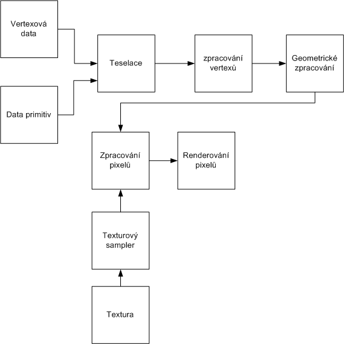
Obrázek 2.1: Jednotlivé fáze renderingu
Na zaèátku procesu zobrazení stojí data vrcholù (vertices) geometrie a informace o jejich vzájemné poloze, takzvané indexy (indices). Vrcholy jsou jednotlivé body v prostoru mající svoji pozici, ke kterım mù�e bıt pøièlenìna dodateèná informace jako je napøíklad nìkolik texturovıch souøadnic, normála, váha bodu, ... Pomocí Direct3D se mohou renderovat následující typy primitiv: seznam bodù, seznam úseèek, pás úseèek, seznam trojúhelníkù, pás trojúhelníkù a vìjíø z trojuhelníkù. Nìkteré typy mají jasnì dané uspoøádání vrcholù (tak, jak jsou za sebou), napøíklad pás trojúhelníkù, u jinıch se musí dodat indexy do pole s vrcholy. Napøíklad u seznamu trojúhleníku v�dy trojice indexù urèuje danı trojúhleník. Programátor nastaví zdroje dat (streams) vrcholù a indexù a poté zavolá nìkterou z vykreslovacích funkcí Draw* (DrawPrimitive, DrawIndexedPrimitive, ...), èim� se spustí samotnı proces renderování. Obvykle se renderují trojúhelníky.
Následnì grafická karta provede teselaci. Tím vyøadí z následujícího zpracování vrcholù ty, které jsou odvrácené od pozorovatele. Potom následuje zpracování jednotlivıch vrcholù, které se pomocí transformaèních matic transformují do post-projekèního prostoru. Tyto transformaèní matice takté� nastaví programátor pøedtím, ne� spustí samotné renderování daného objektu nebo èásti objektu (reprezentovaného napøíklad seznamem trojúhelníkù). Obvykle se jedná o matici, která transformuje objekt do svìtovıch souøadnic z lokálního souøadného systému daného objektu (World matrix), dále o matici která reprezentuje transformaci objektu do prostoru pozorovatele (View matrix). Ten je urèen místem, ze kterého je pohlí�eno na scénu (oznaèujeme za pozici pozorovatele nebo kamery). A nakonec se provede perspektivní transformace pomocí perspektivní matice (Perspective matrix), která transformuje vrchol do post-perspektivního prostoru. Programátor mù�e nastavit ještì další transformace jako napøíklad transformaci texturovıch souøadnic, které jsou neseny ve vrcholu. Dále se pro ka�dı vrchol mù�e spoèítat osvìtlení - obvykle podle phongova osvìtlovacího modelu (viz kapitola Svìtla). Toto je nejbì�nìjší zpùsob, jakım se všechny vrcholy zpracovávají. Existují pochopitelnì i další zpùsoby, ale nechceme tu zabíhat do pøílišnıch podrobností.
Pak nastává geometrické zpracování, které vezme vrcholy trojúhelníku, transformuje je do prostoru závìreèného zobrazení, a po jednotlivıch pixelech je rasterizuje (kreslí do 2D møí�ky obrazovky) na vıslednı obrázek. Ka�dı kreslenı pixel je zvláš� zpracováván, co� obnáší vıpoèet barvy pixelu, kterı se obvykle skládá z osvìtlení aplikované na texturu èi textury v daném bodì. Textury se ètou pomocí texturovıch samplerù. Texturovı sampler dostane souøadnici bodu v textuøe a pøeète ji nebo provede interpolaci nìkolika nejbli�ších bodù (obvykle ètyø - lineární interpolace), aby dostal vìrohodnìjší barvu textury v daném bodì textury. Barvu vrátí do zpracování pixelu, kde se ještì mù�e promíchat (blend) s dalšími barvami textury.
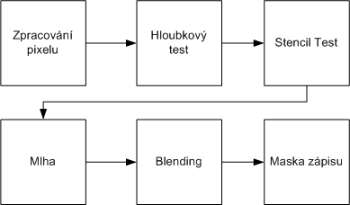
Obrázek 2.2: Pøesnı prùbìh zpracování jednotlivého pixelu a� do zápisu do vısledného obrázu
Po zpracování pixelù následuje hloubkovı test (té� z-test), kde se otestuje, jestli je danı pixel viditelnı nebo jestli ho u� pøekryl nìjakı další pixel (z jiného objektu, trojuhelníku), a proto by se právì zpracovávanı nemìl vykreslit. Hodnota hloukové souøadnice pixelu se testuje oproti hlobkovému bufferu (Depth buffer nebo té� z-buffer), kde je ulo�ena hloubka (zpravidla z-ová souøadnice) vykresleného pixelu na daném místì. Pokud pixel projde hloubkovım testem, mù�e se otestovat oproti stencil bufferu. Stencil buffer je celoèíselnı buffer, kterı nìjakım zpùsobem maskuje èást scény. To, jakım zpùsobem pøesnì se stencil buffer pou�ije, závisí na tom, èeho chce programátor dosáhnout. Chce-li napøíklad renderovat jenom do urèité èásti vısledného obrazu, potom pou�ije hodnotu 1 jako "renderuj" a hodnotu 0 stencil bufferu jako "nerenderuj" danı pixel. Projde-li pixel i stencil testem, provede se na nìm vıpoèet mlhy, pokud si tak programátor pøeje a vıpoèet mlhy zapnul. Nakonec se barva pixelu mù�e promíchat s barvou, která je ji� ulo�ená ve vısledném obrázku. Je také mo�né nastavit masku na zápis do obrazu.
Je vidìt, �e jednotlivé èásti jdou postupnì za sebou, co� umo�òuje grafické kartì provádìt proudové zpracování dat. Tj. napøíklad zpracovává-li se jeden vrchol transformacemi, mù�e se jinı trojúhleník ji� rasterizovat. Tímto je dosa�ena vysoká efektivita zpracování.
Pøed tím, ne� je mo�né spustit samotnı proces renderování, je potøeba provést nìkolik úkonù. Pøednì inicializovat samotnou knihovnu Direct3D. Potom vytvoøit cílovı buffer pro obraz (render target), tj. to, kam se vıslednı obraz renderuje, k nìmu vytvoøit pøidru�ené buffery - depth buffer, pøípadnì stencil buffer. Dále nahrát geometrická data do vertex bufferù a index bufferù, nahrát textury do pamìti (buï grafické karty nebo do hlavní pamìti poèítaèe). Poté se indikuje, �e se zaèíná renderovat scéna. Sma�e se obsah render targetu (cílového obrazu) a pøidru�enıch bufferù. Renderují se jednotlivé objekty, èástí objektù, seznamy trojuheníkù, body.
Pøed ka�dım zavoláním samotné kreslící funkce Draw* se obvykle musí nastavit zdroje dat - vertex buffery, index buffery. Dále se mohou nastavit potøebné textury, zpùsoby ètení dat z textur - nastavení samplerù textur, transformaèní matice (obvykle world, view, perspective), podmínky testování oproti bufferùm atd. Vıèet mo�ností je obrovskı.
Nakonec se indikuje, �e renredování skonèilo a zavolá se funkce Present, která obrázek zobrazí na obrazovku.
Moderní real-time rendering vy�aduje pou�ití grafickıch programù, které bì�í pøímo na grafické kartì. Tyto programy se jmenují shadery. Shadery umo�òují programátoru grafické aplikace vìtší kontrolu nad zpùsobem, jakım se scéna zobrazuje. V pøípadì, �e chceme v aplikaci naplno vyu�ít mo�ností dnešních grafickıch karet, nezbıvá nám jiná mo�nost, ne� pou�ívat programy pro grafickou kartu (shadery). Proto jsme se i my v našem projektu rozhodli shadery pou�ívat. To nám pøedevším umo�nilo vıraznì vylepšit celkovı vzhled renderované scény. Efekty jako vlnící se tráva èi per-pixel osvìtlení terénu a auta jsou umo�nìny právì a jenom díky shaderùm. Pou�ití shaderù s sebou pøináší však nutnost mít framework, wrapper, kterı umí shadery pro grafickou kartu naèítat a dovoluje grafickému enginu s nimi manipulovat. Tento framework pøedstavuje v našem programu tøída CShaders.
Existuje nìkolik druhù shaderù, programù pro grafickou kartu. Dìlit je mù�eme jednak podle zpùsobu pou�ití, jednak podle vyspìlosti hardwaru, na kterém shadery bì�í. S postupnım vıvojem grafickıch karet je dovoleno psát komplexnìjší a slo�itìjší shadery. Dnešní generace grafickıch karet (rok 2006) podporuje verzi shaderù 3.0. Pøedchozí verze shaderù jsou 1.0, 1.1, 1.4 a 2.0. Obecnì se dá øíct, �e od verze shaderù 1.4 jsou shadery nástrojem, se kterım je u� mo�né toho hodnì udìlat. Rozdíly mezi jednotlivımi verzemi shaderù spoèívají zejména v poètu povolenıch instrukcí v jednom programu shaderu a poètu funkcí, které daná verze shaderu musí nativnì (intrinsic) podporovat. My jsme se rozhodli pou�ít shadery verze 2.0. To zejména proto, �e verze shaderù 1.0 a 1.1 nemìly nìkteré funkce, instrukce, které jsme potøebovali pou�ít, a verze shaderù 1.4 má nízkı limit instrukcí, do kterého by se naše programy pro grafickou kartu nevešly.
Podle zpùsobu pou�ití se shadery dìlí na pixel shadery a vertex shadery. Vertex shadery zajiš�ují transformaci geometrie po jednotlivıch vrcholech. To znamená, �e program vertex shaderu je zavolán pro ka�dı vrchol (vertex) právì renderovaného objektu scény. Vertex neobsahuje obvykle jenom polohu v prostoru objektu, ale také napøíklad texturové souøadnice, normálu (slou�í pro vıpoèet osvìtlení) atp. To znamená, �e vertex shader neumo�òuje transformovat jenom polohu bodu v prostoru, ale takté� provádìt rùzné operace s texturovımi koordináty, poèítat osvìtlení v daném bodì atd.
Pixel shadery se naopak provádìjí pro ka�dı potenciálnì vykreslenı bod renderovaného objektu. Pixel shader umo�òuje zejména mìnit vıslednou barvu bodu (pixelu) a jeho hloubku ve scénì. Pixel shadery se zejména pou�ívají na per-pixel vıpoèet osvìtlení, zapoèítání, jestli se danı bod nachází ve stínu nebo ne atp.
Vertex shadery nahrazují èást zpracování vrcholù, zatímco pixel shadery nahrazují èást zpracování pixelù na grafické kartì. (Viz Fáze renderingu).
Shadery jako takové se pro knihovnu Direct3D píší v jazyce HLSL (High Level Shading Language), kterı je podobnı jazyku C++. Má ovšem nìkteré odlišnosti jako pøiøazení promìnnıch jednotlivım registrùm (texturové, barevné, hloubkové, ...) a vylepšenou podporu práce s vektory a maticemi do velikosti 4x4. V programu je potom potøeba shader nahrát a pøelo�it do assembleru, co� zajiš�ují funkce knihovny Direct3D. Pøi pou�ívání shaderù je z programátorského hlediska v programu navíc potøeba nastavit dané shadery (jeden vertex a jeden pixel shader) a nastavit konstantní promìnné v shaderech, které se nemìní po dobu jednoho zavolání nìkteré z funkcí Draw*. Nakonec je nutné nastavit formát vstupních dat a potom u� je mo�né spustit renderování daného objektu èi jeho èásti. Proto�e je takovıch programù pro grafickou kartu obvykle mnoho, je potøeba je nìjak efektivnì spravovat. K tomu slou�í shader framework reprezentovanı tøídou CShaders.
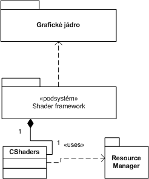
Obrázek 2.3: Shader framework má za úkol:
Resource manager nahraje vertex shader a prostøednictvím grafického jádra ho pøedá do tøídy CShaders. Ta mu následnì pøiøadí jedineènı klíè (handle), podle kterého je shader jednoznaènì identifikován. Dále se zjistí názvy všech konstantních promìnnıch, které shader pou�ívá. Ka�dému názvu konstantní promìnné je také pøiøazen jedineènı klíè a mapování mezi tímto klíèem a názvem promìnné je ulo�eno do tabulky. Jestli�e takovı název promìnné ji� existuje, je mu pøiøazen stejnı klíè jako existujícímu názvu. To zjednodušuje práci, proto�e stejné názvy promìnnıch díky tomu musí znamenat stejnou vìc. Vıhoda toho je ta, �e u�ivateli frameworku si staèí vyzvednout jedineènı klíè k názvu pouze jednou a poté ho celou dobu pou�ívá k nastavení konstantní promìnné v shaderu, a� se jedná o jakıkoliv shader. Nevıhodou je fakt, �e nìkdo mù�e pou�ít stejnı název konstantní promìnné na nìco úplnì jiného v programu shaderu a mù�e nastat nepøíjemná chyba. Aby se takové situaci zabránilo, kontroluje se pøi naèítání shaderu typ promìnné. Jestli�e je ve dvou rùznıch shaderech tedy pou�it stejnı název konstatní promìnné a její typ je rùznı, shader framework zahlásí pøi naèítání chybu. V pøípadì, �e jde o stejnı typ promìnné se stejnım názvem, automatická kontrola nic nepozná, tak�e programátoøi si musí takovı scénáø ohlídat sami, aby nedošlo ke špatnému pou�ití. To je ovšem také nepravdìpodobné, proto�e programátor je povinen nastavit nejdøíve shader, ne� zaène nastavovat jeho jednotlivé konstantní promìnné.
Proto�e konstantní promìnnou mù�e bıt nejen struktura, ale také pole, èi dokonce kombinace vnoøené struktury ve struktuøe, pole struktur atp., prochází se ještì samotná struktura konstantní promìnné a vytváøí se rozšíøená tabulka s handly jednotlivıch podnázvù tak, jak jdou za sebou ve struktuøe, resp. jak jdou za sebou prvky v poli (prvky pole mají pøednost pøed prvky struktury). Tyto jednotlivé podnázvy se u� ale nepøidávají do tabulky mapování mezi jmény a handly. Tuto rozšíøenou tabulku handlù si však u�ivatel mù�e vyzvednout.
Pøi procházení konstantních promìnnıch si dále shader framework zapamatuje mapování mezi vlastními handly konstantních promìnnıch a interními handly, které pou�ívá knihovna Direct3D a jsou pro ka�dı shader jinı.
Uchování shaderù se dìje zvláš� pro pixel a pro vertex shadery. Shadery jsou uchovávány v poli. Ke ka�dému shaderu v poli je pøiøazena bitová mapa, která uchovává mapování mezi handly konstatních promìnnıch a interními handly, které pou�ívá knihovna Direct3D.
Shader framework nastaví shader knihovnì Direct3D podle handlu, kterı je mu pøidìlen pomocí funkcí SetPixelShader() a SetVertexShader(). Po nastavení shaderu je potøeba nastavit jednotlivé konstantí promìnné pro danı shader.
Nastavení konstantních promìnnıch pro danı shader se provádí pomocí funkcí SetVS*(), resp. SetPS*(). Konstantní promìnné se nastavují pomocí svıch handlù. Po ka�dém nastavení shaderu je tøeba nastavit znovu všechny konstantní promìnné. U vertex shaderù jsou z této potøeby opìtovného nastavování vyjmuty matice World, View, Projection matrix a jejich kombinace WorldView a WorldViewProjection. To v pøípadì, �e se v shaderovém programu pou�ívají tyto matice pod názvy: WorldMat, ViewMat, ProjectionMat, WorldViewMat, AllMat. Tato vıjimka byla zavedena z dùvodu, �e by bylo pracné neustále nastavovat tyto matice pro ka�dı vertex shader. Tyto matice se èasto pou�ívají, prakticky v ka�dém vertex shaderu alespoò nìkterá.
Dále jsou nìkteré názvy oproštìny od nutnosti získávat jejich handle podle jména. Jsou jim handly pøiøazeny implicitnì. Jedná se o názvy: AllMat, WorldViewMat, ViewMat, WorldMat, ProjMat, Material, MaterialPower, Ambient, Specular, DirLight a SpotLight.
Handly na shadery se získávají pøi nahrávání daného shaderu funkcí Load*().
Handly na konstatní promìnné, pokud nejsou implicitní, se mohou získávat pouze mezi voláním BeginShaderConstantFetch() a EndShaderConstantFetch(). Handly konstatních promìnnıch se získávají voláním funkce GetHandleByName(). Tato ochranná sekce byla do frameworku pøidána z toho dùvodu, aby donutila u�ivatele frameworku vyzvednout si všechny handly konstantních promìnnıch ji� pøi inicializaci programu, po nahrání shaderù. Pøi renderování v renderovací smyèce by bylo získávání handlù pomalé a neefektivní. Sice to není opatøení typu u�ivatel musí, ale autor vìøí, �e je to dostateèné na to, aby se u�ivatel nad tím zamyslel a pou�il shader framework efektivním zpùsobem.
Hlavním znakem shader frameworku je to, �e u�ivatel shader frameworku ji� nepracuje se stringy, ale s handly, s nimi� je práce mnohem efektivnìjší. Navíc je mapování handlù ulo�eno v bitovıch mapách, co� umo�òuje jejich rychlé vyhledávání. Tìmito pøístupy jsme se sna�ili framework urychlit do co nejvyšší mo�né míry.
U�ivatel nahraje shadery a vyzvedne si jejich handly. Poté si vyzvedne handly konstatních promìnnıch. Pøi renderování nastaví zvolenı vertex a pixel shader a teprve poté všechny konstantní promìnné. Transformaèní matice mù�e naproti tomu nastavit kdykoliv.
Termín Level of Detail (zkrácenì LOD) je jedním z nejpodstatnìjších v real-time grafice. V obecném pojetí jde o techniku sni�ování komplexnosti zobrazovanıch dat v závislosti na jejich vzdálenosti od pozorovatele. U�itím perspektivní projekce, která se vzdáleností objektu od pozorovatele ubírá na jeho velikosti (co� odpovídá našemu vnímání okolí), se sni�uje vliv ka�dého vzdáleného objektu na vıslednı obraz, a tedy i jeho vıznam pøi zobrazování. Proto je ne�ádoucí plıtvat vıpoèetní kapacitou procesorovıch jednotek na tyto objekty. V praxi to znamená, �e objekty, které jsou dále od pozorovatele, se renderují jinou technikou, v jiné podobì, s jinou geometrií, nebo dokonce vùbec(!) Existuje ji� nepøeberné mno�ství popsanıch pøístupù k implementaci této techniky, pro hlubší porozumìní je mo�né doporuèit knihu Level of Detail for 3D Graphics. Vıvoji efektivního a kvalitního LODu se dají vìnovat (a mnohımi vıvojovımi tımy jsou mu vìnovány) roky vızkumu a programování. To samozøejmì nebylo v našich silách, proto jsme hledali variantu pøijatelnì úèinnou a dostateènì jednoduchou k implementaci. Nakonec jsme i zde vyu�ili políèkového pohledu na scénu a navrhli a implementovali velmi snadnou metodu tzv. diskrétního LODu.
Diskrétní varianta LODu spoèívá v tom, �e je pro ka�dı objekt scény pøedem pøipravena sada modelù, z nich� se v ka�dou chvíli vybírá jeden, kterı se zobrazí. Vıbìr samozøejmì probíhá na základì vzdálenosti objektu od pozorovatele. I samotnı vıpoèet vzdálenosti objektù od pozorovatele mù�e trvat dlouho, nebo� je provádìn pro ka�dı objekt scény (korektní urèení vzdálenosti zahrnuje vıpoèet odmocniny), a právì zde jsme vyu�ili zaøazení objektù do diskrétní møí�ky polí mapy. K urèení volby kvality modelu se pou�ije polo�ka dvourozmìrné ètvercové matice (naèítána ze souboru .lodMap) namapovaná na pole mapy tak, �e její støed je umístìn na pole, kde se nachází pozorovatel. Ka�dı prvek matice pak odpovídá jednomu poli mapy. Na polích, na nì� není namapován �ádnı prvek matice pro její pøípadnou menší velikost, se implicitnì pou�ije model nejni�ší dostupné kvality (to bıvá zpravidla jednobarevnı kvádr). Pøíklad pou�ití takové matice je vidìt na následujícím obrázku.
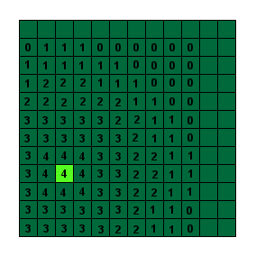
Obrázek 2.4: Namapování matice definice úrovní detailu na herní mapu; kamera je umístìna na svìtlém poli; vyšší èíslo udává komplexnìjší model, na nepokrytıch polích se v�dy pou�ije stejnı jako pøi nule
Takovıchto matic existuje hned nìkolik. Jedna pro LOD terénu, jiná pro objekty a jiná pro trávu. To umo�òuje snadnou nastavitelnost kvality zobrazování ka�dé ze zmínìnıch èástí zvláš� (nastavení "Model quality" ve høe tedy ve skuteènosti pouze volí správnou matici z nìkolika pøeddefinovanıch). Zatímco u objektù nenese u�ití diskrétní varianty LODu �ádné potí�e (a díky tabelování polo�ek je extrémnì rychlé), pro terén je situace daleko slo�itìjší. Terén je toti� sestaven z na sebe navazujících èástí a diskrétní LOD znamená pou�ít v mnohıch pøípadech dvì rùzné úrovnì detailu vedle sebe. Tento problém více rozebíráme v kapitole o terénu.
Dùsledkem zavedení diskrétního LODu je èasto viditelná zámìna modelu objektu pøi pøechodu z jednoho pole mapy na druhé (nìkdy se zcela zmìní geometrie, co� je patrné zvláštì v ni�ších nastaveních kvality zobrazování ve høe). To se dá samozøejmì potlaèit (nebo pøinejmenším utlumit) pou�itím komplexnìjšího modelu do vìtších vzdáleností, tj. tak daleko, aby zmìna ji� nebyla patrná. To ovšem mírnì potlaèuje vıhodu LODu jako takového. Celkem je tedy tøeba øíci, �e vytváøení modelù a jejich umis�ování do vzdáleností je pøedevším zále�itost citu pro kompromis. Na následujících obrázcích mù�ete vidìt 4 modely barelu, ka�dı o jiném poètu polygonù. Ve høe pak s nastavením vyšší kvality modelù není vidìt �ádnı pøechod, pøesto�e v dálce je barel tvoøen pouze 16 trojúhelníky.
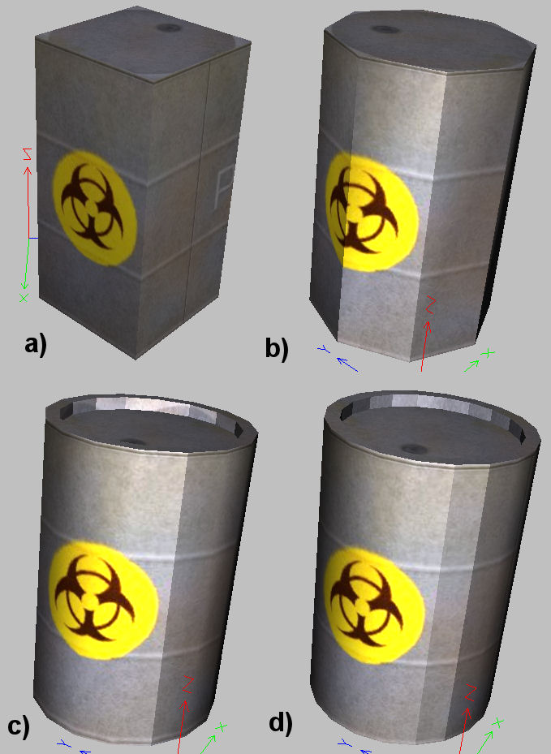
Obrázek 2.5: 4 rùzné modely jednoho objektu ve høe: a) 16 trojúhelníkù, b) 32 trojúhelníkù, c) 188 trojúhelníkù, d) 236 trojúhelníkù.
Pro objekty je definováno 10 úrovní detailu, ka�dı tedy mù�e bıt reprezentován maximálnì 10 rùznımi modely. Pokud jich má ménì, jsou nìkteré modely pøiøazeny více úrovním. Pøiøazení modelù úrovním detailu nìjakého objektu je specifikováno v souboru formátu .modelDef.
Rùzné druhy svìtel v naší aplikaci hrají podstatnou roli v celém renderovacím modelu. Dobøe vypadající osvìtlení pøidává na realistiènosti zobrazované scény. V naší aplikaci pou�íváme následující druhy svìtel:
Pou�itı osvìtlovací model je odvozenı z Phongova osvìtlovacího modelu.
Svìtlo reflektoru od auta je ku�elovım svìtlem. Tzn., �e oblast, do které vrhá svìtlo, je dána úhlem a vzdáleností dosvitu. Aèkoliv je typické, �e auto má taková svìtla vepøedu dvì, v naší aplikaci je dovoleno pouze jedno svìtlo typu reflektor u auta na jedno auto. To je z dùvodu pøílišné nároènosti vıpoètu osvìtlovacího modelu pøi zobrazování scény. Pøi správném a uvá�eném umístìní jednoho reflektoru auta je mo�né dosáhnout efekt velice podobnı dvìma reflektorùm. Svìtlo reflektoru auta se definuje v souboru *.light.
Svìtlo od lampy je ku�elovım svìtlem s texturou osvìtlení (tzv. light map) pou�itou na terén. Místo pøímého vıpoètu osvìtlení terénu lampou se pou�ívá pøedpoèítaná textura osvìtlení, co� vıraznì sni�uje nároènost vıpoètu (navíc tøeba brát v potaz, �e lamp mù�e bıt ve scénì i 100 a více). Pro osvìtlení objektù se svìtlo od lamp poèítá, ale díky omezenému dosvitu se znaènì redukují nutné vıpoèty. Textura osvìtlení musí bıt èernobílá, barva svìtla je pak pevnì definována pro všechny lampy. Svìtlo musí smìøovat pouze na políèko, kde lampa stojí, jinak nedojde k jeho zahrnutí do osvìtlovacího modelu. (I pro samotnou texturu osvìtlení platí, �e je aplikována pouze na jediné pole pro ka�dou lampu.) Svìtlo od lampy se definuje v souboru *.light. Pokud není zadána textura osvìtlení, nebude terén lampou osvìtlen.
Smìrové svìtlo se pou�ívá k jedinému úèelu, a to kreprezentaci Slunce jako velmi vzdáleného svìtelného zdroje. Slunce je od Zemì natolik daleko, �e se paprsky svìtla smìøující k Zemi dají pova�ovat za paralelní. Toto zjednodušení umo�òuje vıraznì rychlejší vıpoèet svìtla od Slunce pro renderovanou scénu. Pro terén je navíc osvìtlení Sluncem pøedpoèítáno do svìtelné textury (viz kapitola Terén), pro objekty se musí poèítat za bìhu. Zvláštní pøístup jsme pojali k autu (jako�to jednomu z hlavních grafickıch prvkù ve høe), pro nì� se poèítá osvìtlení Sluncem v ka�dém renderovaném pixelu (je-li tak povoleno zapnutím "per-pixel car lighting" v konfiguraci), navíc s realistiètìjším osvìtlovacím modelem (viz ní�e). Pro terén se díky pøedpoèítané svìtelné texturì poèítá svìtlo de facto také pro ka�dı pixel. Svìtelná textura pro terén nejenom zrychluje renderování scény, ale také nám pomáhá skrıt problém s osvìtlením, kterı nastává mezi políèky terénu díky nevhodnì navazujícím normálám. Barva smìrového svìtla se dá ovlivnit nastavením svìtelného modelu oblohy a nastavením denního èasu ve høe.
Svìtelnı billboard je nejjednodušším zpùsobem, jak nahradit poèítané osvìtlení a slo�ité svìtelné efekty. Jedná se o obrázek natáèenı v�dy oproti pohledu pozorovatele tak, �e jej v�dy vidí èelem k sobì. Pomocí svìtelnıch billboardù jsou ve høe vytvoøeny svìtelné korony (hvìzdy) u lamp a pøedních a zadních svìtel aut, ale vzhledem k mo�nostem konfigurace není tì�ké taková svìtla ve vìtším mno�ství pøidat k jakımkoli objektùm. Svìtelnı billboard se definuje v souboru *.light.
Globální svìtlo je svìtlo, které je pøipoèítáno ka�dému pixelu scény bez ohledu na jeho umístìní èi natoèení plochy, kterou reprezentuje. Slou�í jako aproximace odra�eného a rozptıleného svìtla scény, které se jinım zpùsobem dnes (na stávajícím HW) nedá spoèítat za bìhu. Globální svìtlo se definuje v souboru mapy *.urmap.
Pou�itı osvìtlovací model je odvozenı z empirického Phongova osvìtlovacího modelu, kterı je v plné èi zjednodušené podobì bì�nì pou�íván v real-time eginech. Mezi hlavní rysy ka�dého modelu patøí popis interakce svìtelného paprsku (èi svazku svìtelnıch paprskù) s objektem, pøednì zpùsob, jakım se paprsek odrá�í. (Objekty ve skuteèném svìtì odrá�í jen nìkteré paprsky v závislosti na jejich vlnové délce. Ty paprsky, resp. fotony, které objekt odrazí a které následnì dorazí do našeho oka, chápeme jako barvu objektu.) Odraz paprsku na povrchu objektu mù�e bıt dvojího druhu - difusní a zrcadlovı. Pøi difusním odrazu se dopadlé paprsky na povrchu objektu rozptılí do všech smìrù vlivem mikroskopické struktury (mù�eme øíci drsnosti) povrchu. Pro zrcadlovı (specular) odraz platí známı zákon odrazu: Úhel odrazu se rovná úhlu dopadu a odra�enı paprsek le�í v rovinì dopadu. Podle druhu odrazu nazıváme té� dále se šíøící svìtlo difusní, resp. spekulární. V real-time enginech se zpravidla nepoèítá s vícenásobnımi odrazy svìtla (paprsky, která se ve scénì nìkolikrát odrazí a teprve poté dorazí k pozorovateli), nebo� je to vıpoèetnì velice nároèné. Tyto vícenásobné odrazy s rozptylem jsou pøitom vıznamnou slo�kou osvìtlení reálného svìta, proto je tøeba je nahradit. Phongùv model nahrazuje tyto odrazy globálním svìtlem (tzv. ambient), které je konstantní pro celou scénu (bez nìj je plocha odvrácená od Slunce zcela èerná, pokud ji neozáøí jinı zdroj). Vzhledem k pou�itému svìtelnému modelu a metodì zobrazení scény nevznikají vr�ené stíny od objektù. Musí se do scény dodávat umìle, pakli�e je chceme. Viz kapitola Stíny.
Phongùv osvìtlovací model se v naší aplikaci poèítá dvìma zpùsoby - pro vrcholy nebo pro pixely renderované scény. Jestli�e se svìtlo poèítá pouze pro vrcholy, je posléze vısledná hodnota svìtla interpolována mezi vrcholy ka�dého trojúhleníku geometrie objektu (zpravidla bilienární interpolací). To pøedstavuje ménì pøesnı model osvìtlení ne� metoda poèítání svìtla pro jednotlivé pixely, kdy se mezi vrcholy namísto svìtla interpoluje jejich normála, a teprve s touto pøesnìjší normálou se provádí vıpoèet osvìtlení. Metoda vıpoètu osvìtlení v pixelech, tzv. per-pixel lighting, je ovšem velmi nároèná na vıpoèetní kapacitu.
Následující rovnice ukazuje vıpoèet celkového svìtla pro jeden svìtelnı zdroj:
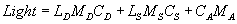
V uvedeném vzorci je Ld koeficient difusního svìtla, Md je difusní slo�ka materiálu objektu, Cd je barva difusního svìtla. Ls je koeficient spekulárního svìtla, Ms je spekulární slo�ka materiálu, Cs je barva spekulárního svìtla, Ca je barva ambientního svìtla a Ma je ambientní slo�ka materiálu objektu. Koeficienty Ld a Ls závisí na pou�itém druhu svìtla, na vzájemné pozici pozorovatele a svìtla a na tvaru geometrie objektu. Zatímco difusní slo�ka vypovídá zpravidla o barvì objektu a jeho celkovém osvìtlení, ménì dùle�itá spekulární slo�ka dodává na realistiènosti, nebo� reprezentuje paprsky odra�ené od lesklého materiálu pøímo k pozorovateli. Spekulární slo�ka se v naší aplikaci pou�ívá jenom pro vıpoèet osvìtlení auta, kdy� je zapnuta volba "per-pixel car lighting". Vlastnosti materiálu povrchu objektu (tj. Md a Ms) urèují mno�ství svìtla, které se rozptılí, resp. odrazí, po jednotlivıch barevnıch slo�kách.
Koeficient Ld u smìrového svìtla se spoèítá podle vzorce
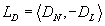
kde Dn je normalizovanı vektor smìru normály geometrie povrchu a Dl je normalizovanı vektor smìru smìrového svìtla. Lomené závorky znaèí skalární souèin. Tedy koeficient Ld závisí na kosínu úhlu mezi normálovım vertorem geometrie povrchu objektu a vektorem opaènım k smìrovému vektoru svìtla.
Koeficient Ls u smìrového svìtla vyjádøíme
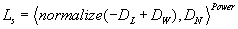
Stejnì jako v pøedchozím vztahu vyjadøuje i zde Dl normalizovanı smìrovı vektor šíøení svìtla, Dw je normalizovanı vektor smìru od zkoumaného bodu k pozorovateli, Dn je normalizovanı normálovı vektor geometrie povrchu a Power je koeficient urèující lesklost (èi odrazivost) povrchu. Lomené závorky znaèí skalární souèin. Z uvedeného vztahu je patrné, �e nejvìtší osvìtlení spekulárním svìtlem získají ta místa povrchu, u kterıch je malı úhel mezi smìrem k pozorovateli a smìrem odra�eného svìtla. Vzhledem k tomu, �e se lesklost materiálu ve vztahu projevuje jako mocnitel, jsou tato místa zpravidla velmi malá (èím lesklejší povrch, tím silnìjší odra�ené svìtlo, ale zároveò tím u�ší viditelnì zasa�ená plocha). Jak ji� bylo zmínìno, jde o empiricky vytvoøenı model, uvedené rovnice nejsou pøímo zalo�ené na fyzikálních zákonech (pouze se je sna�í napodobit).
Pro ku�elová svìtla jsou vıpoèetní rovnice trochu slo�itìjší. Poèítá se se dvìma ku�ely (vnitøní a vnìjší), které mohou mít vıraznì odlišnou intenzitu osvìtlení. Koeficient Ld u takového svìtla (reflektor auta, svìtlo od lampy) se spoèítá podle vztahu
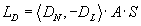
v nìm� první èást je stejná jako u smìrového svìtla, A je koeficient útlumu svìtla a S je koeficient závisející na vnìjším a vnitøním úhlu svìtla ku�elu. Koeficient A se dá vyjádøit takto:
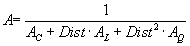
Dist je vzdálenost bodu geometrie od zdroje svìtla, Ac je konstantní koeficient útlumu, Al je lineární koeficient útlumu a Aq je kvadratickı koeficient útlumu.
Koneènì koeficient S vyjádøíme
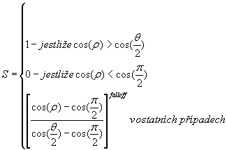
ρ je úhel mezi smìrem svìtla a smìrem k bodu geometrie, pro kterı se svìtlo poèítá, φ je úhel rozsahu vnìjšího ku�ele svìtla, θ je úhle rozsahu vnitøního ku�ele svìtla a falloff je koeficient rychlosti útlumu svìtla mezi vnitøním a vnìjším ku�elem.
Stíny jsou dùle�itım faktorem pro prostorové vnímání a vnášejí do scény pocit realistiènosti. V dnešní real-time grafice jsou stíny velkım problémem. Ji� v úvodní kapitole grafického enginu jsme rozebrali zpùsob vykreslování scény pomocí z-bufferu. Tento postup pou�ívanı vìtšinou souèasnıch grafickıch karet nám umo�ní osvìtlit povrchy objektù svìtelnımi zdroji, ale neumo�ní nám pøímo potlaèit osvìtlení tam, kde v cestì svìtlu brání nìjakı jinı objekt (vrhající stín). Vıpoèetnì slo�itìjší je tedy objekt neosvìtlit (zjistit, �e osvìtlen bıt nemá), ne� osvìtlit. My jsme pojali navr�ení a implementaci dynamickıch stínù jako jeden ze základních kamenù grafického enginu, a proto jsme mu vìnovali znaènou èást doby vıvoje. Techniky, které jsme pou�ili, i vìtšinu problémù, se kterımi jsme se potıkali, se pokusím rozebrat v následujících odstavcích. Nejdøíve však krátce popíšeme metody, které se dají prakticky pou�ít pro implementaci stínu na dnešním hardware.
Algoritmus shadow volume spoèívá v tom, �e se ka�dému objektu vygeneruje stínové tìleso reprezentující zastínìnı prostor. Takové tìleso se musí navíc vytvoøit pro ka�dou uspoøádanou dvojici (objekt scény, svìtelnı zdroj), nebo� jeden objekt mù�e vrhat nìkolik stínù (tolik stínù, kolik je zdrojù svìtla ve scénì). Pøi samotném renderování scény se pro ka�dı pixel urèí, zda le�í v nìjakém stínovém tìlese patøícím zvolenému svìtelnému zdroji, a na základì toho se pixel buïto osvìtlí, nebo neosvìtlí danım svìtlem. Urèení, zda pixel le�í v nìjakém stínovém tìlese, se zpravidla implementuje poèítáním pøivrácenıch a odvrácenıch stìn stínovıch tìles, nacházejících se mezi pixelem a pozorovatelem. Je-li poèet pøivrácenıch stran vìtší ne� poèet odvrácenıch, znamená to, �e je buïto pozorovatel, nebo pixel uvnitø nìjakého stínového tìlesa.
Obrázek 2.6: Ukázka shadow volume ze hry Doom 3 - ID Software.
Algoritmus shadow volume má nìkolik problémù. Pøednì nedoká�e ve své základní verzi generovat mìkké stíny nebo alespoò stíny s mìkkımi okraji. Dále je vıpoèetnì velmi nároènı na procesor. Stínová tìlesa sama o sobì ji� pøidávají na slo�itosti scény, navíc pro dynamická svìtla nebo dynamické objekty je tøeba stínová tìlesa generovat v ka�dém snímku znovu. Další nevıhodou je problém s rozpoznáním situace, kdy pozorovatel stojí uvnitø nìjakého stínového tìlesa (pak klasickı algoritmus urèení zastínìní dává špatné vısledky, nebo� do poètu pøivrácenıch stìn nejsou zahrnuty ty, které jsou za pozorovatelem). Aby tento problém bylo mo�né vyøešit, je tøeba vıraznì slo�itìjší (implementaènì i èasovì) algoritmus na tvorbu stínovıch tìlese (ta musí bıt v takovém pøípadì korektnì uzavøena ze všech stran). To zahrnuje nutnost triangulovat slo�ité nekonvexní objekty (stále za bìhu aplikace a pro ka�dı snímek). Na druhou stranu pøináší shadow volume pomìrnì levné (vıkonostnì) stíny pro statické objekty osvìtlené statickım svìtelnım zdrojem, jejich� stínové tìleso mù�e bıt pøedpoèítáno ještì pøed zaèátkem renderování. Na obrázku 2.6 je vidìt typické pou�ítí algoritmu shadow volume na stíny v podání slavného Carmackova Doomu 3. I pøes všechny snahy o implementaci stínù v Doom 3 nebylo nakonec umo�nìno, aby objekt vrhal stín sám na sebe (aèkoliv to na obrázku není pøíliš zøetelné). Jinak se ale jedná o profesionální implementaci algoritmu shadow volume s mnoha optimalizaèními technikami jako napøíklad generování stínového tìlesa pomocí shaderù na grafické kartì.
Algoritmus shadow mapping spoèívá v tom, �e se nejprve vyrenderuje hloubkovı obraz scény z pohledu svìtla a potom pøi renderování scény z pohledu pozorovatele se porovnává hloubka renderovaného pixelu pøevedená do prostoru svìtla s ulo�enım hloubkovım obrazem. Jestli�e je hloubka pixelu menší ne� hloubka v hloubkovém obrazu, je pixel osvìtlen a není ve stínu. Jestli�e je ale vìtší, tak to znamená, �e tomuto pixelu je zdroj svìtla zakryt a tudí� je ve stínu, jak je vidìt na obrázku 2.7.
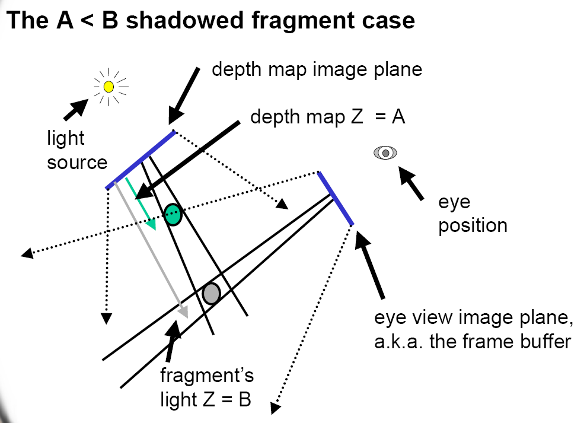
Obrázek 2.7: Ukázka pøípadu shadow mappingu, kde se pixel nachází ve stínu. Pøevzato ze slidù Shadow Mapping - Cass Everit - NVIDIA Corporation.
Algoritmus shadow mappingu je pova�ován za obecnìjší ne� algoritmus shadow volume. Umo�òuje napøíklad jednoduše stínovat i prùhledné objekty. Jeho vıhodou je, �e se pøímo nevá�e na geometrii scény, s jistımi minoritními úpravami doká�e generovat mìkké okraje stínù a nezatì�uje tolik procesor, èím� mu umo�òuje vìnovat se dùle�itému poèítání fyziky, AI atd. Ovšem nevıhody jsou takté� mnohé. Dá se øíci, �e algoritmus shadow mappingu by dobøe fungoval v pøípadì, �e by všechny textury byly spojité a nikoliv diskrétní a èíselná pøesnost floatu neomezená. Tak tomu není a vzniklé nepøesnosti rùznımi zpùsoby stín kazí , jak je vidìt na obr. 2.8. Ještì mnohem zøetelnìjší jsou ovšem problémy za bìhu programu, které se na statickém obrázku nedají poøádnì zachytit.
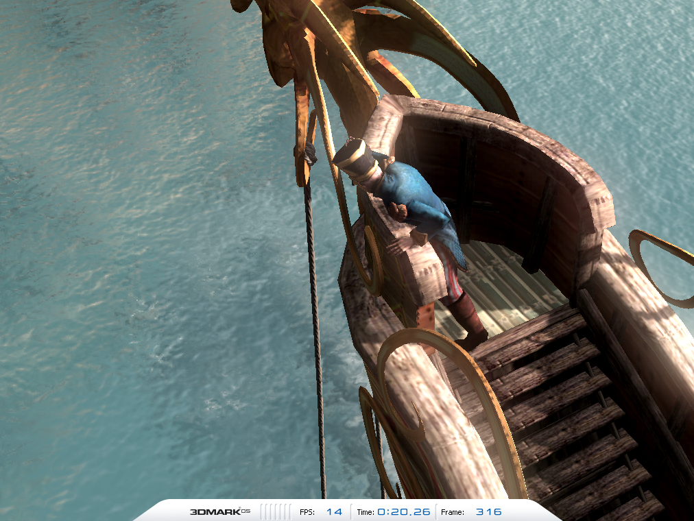
Obrázek 2.8: Ukázka shadow mappingu z profesionálního benchmarku 3DMark 2005. Je vidìt, �e okraje stínu jsou divné a plavou.
Rozhodli jsme se testovat oba hlavní zpùsoby implementace stínù, jak shadow mapping, tak shadow volume. Napsali jsme základní verzi algoritmu shadow volume, která z pohledu svìtla generovala stínová tìlesa následujícím zpùsobem. Nejdøíve se nalezla silueta objektu z pohledu svìtla. Ta se dá aproximovat vıbìrem takovıch hran sítì trojúhelníkù, které patøí jednomu pøivrácenému a jednomu odvrácenému trojúhelníku. Procházely se tedy všechny pøivrácené trojúhelníky objektu a jejich hrany se vkládaly do dynamického seznamu hran. Pokud tam u� taková hrana byla, znamenalo to, �e patøí dvìma pøivrácenım trojúhelníkùm, a tedy není souèástí siluety. Taková hrana se ze seznamu vyjmula. Po projití všech pøivrácenıch trojúhelníkù se v seznamu hra nachází hrany tvoøící siluetu objektu. Pro nekonvexní objekty obsahuje seznam hran nìkteé hrany navíc, které nejsou èástí siluety, ale rozpoznávání takovıchto hran by vzalo pøíliš mnoho vıpoèetního èasu, proto jsou té� pova�ovány za èást siluety; algoritmus zastínìní to lehce zpomalí, ale nepoškodí.
Pro takto nalezenou siluetu se vygenerovalo stínové tìleso prota�ením vrcholù okrajovıch hran ve smìru spojnice svìtelného zdroje a daného vrcholu. Novì vzniklé vrcholy se spojí hranami s pùvodními vrcholy siluety a vısledná sí� se trianguluje (triviální operace, vzhledem k tomu, �e sí� je tvoøena rovinnımi ètyøúhelníky). Snadné není zvolit správné prota�ení, nebo� zbyteènì velké trojúhelníky zpomalují rendering, ale trojúhelníky nesmí konèit uvnitø zobrazované scény (tzn. �e musí bıt ukonèeny a� za celou scénou, nebo alespoò za její viditelnou èástí). Pøi renderingu se v první verzi pou�il stencil buffer na spoèítání pøivrácenıch a odvrácenıch hran. Jestli�e hrana v daném pixelu byla pøivrácená pøièetla se do stencil bufferu jednièka, jestli�e byla odvrácená jednièka se ze stencil bufferu odeèetla. Nakonec tedy jednièka ve stencil bufferu maskovala pixely, které byly ve stínu. Ve druhé verzi se tento postup pøevedl na poèítání uvnitø zvláštní textury, která mohla zachytit více stavù, a tedy i více rùznıch stínù; tím se stíny od rùznıch svìtel mohly navzájem pøekrıvat.
Popsaná technika se ukázala mít hned nìkolik nevıhod. Stínová tìlesa byla tvoøena pouze boèními stìnami, tedy bez podstav. V pøípadì takového úhlu pohledu pozorovatele, kdy "nahlédl" do nìkterého stínového tìlesa skrz neexistující podstavu, spoèítaly se pøivrácené a odvrácené stìny špatnì a stíny se "rozdrobily" (èásti vidìt byly, èásti ne, jinde se objevil tam kde nemìl). Dalším problémem byl vıpoèetní èas, nebo� se vzrùstajícím poètem dynamickıch objektù ve scénì vzrùstal poèet tìles, která bylo potøeba generovat ka�dı snímek. Ukázalo se, �e technika stínovıch tìles pøíliš zatì�uje procesor. Nastudovali jsme další techniky, které by pravdìpodobnì vyøešily nìkteré problémy, ale vzhledem k implementaèní nároènosti jsme se rozhodli, �e vıvoj algoritmu shadow volumu ukonèíme, nebo� vıvoj shadow mappingu byl v této dobì ji� dál a rozhodli jsme se spokojit s jedním druhem vıpoètu dynamickıch stínù.
Implementace shadow mappingu je obtí�ná zejména proto, �e vy�aduje, aby nìkolik transformaèních matic bylo nastaveno správnì. Byl vytvoøen speciální testovací projekt jenom na to, aby se povedlo metodu na jednoduchém prostøedí s jednou konvièkou a obdelníkem, na kterı vrhala konvièka stín, implementovat. Na tuto implementaci ji� byly pou�ity shadery, proto�e se ukázalo, �e bez nich není implementace shadow mappingu prakticky mo�ná. Problém nastal s pøenosem do naší hlavní aplikace Unlimited raceru, proto�e ta v tìchto chvílích ještì programy pro grafickou kartu nepou�ívala. Z poèátku se myslelo, �e bude mo�né napojit transformaèní èást fixního zpracování grafické karty (fixní zpracování je zpùsob renderingu pou�ívané pøed pøíchodem grafickıch programù - pro více informací se dá na internetu hledat fráze "fixed function pipeline" nebo konzultovat nápovìdu ke knihovnì Direct3D) na pixel shaderovı program, to se ovšem po urputné snaze ukázalo jako nereálné a vynutilo si to kompletní pøechod na shadery. Dnes s odstupem èasu mù�eme konstatovat, �e aèkoliv si tato zmìna vynutila radikální pøepracování návrhu celého zobrazovacího procesu i grafickıch objektù, byla to zmìna u�iteèná, nebo� otevøela nové implementaèní mo�nosti, kterıch jsme se sna�ili nadále vyu�ít.
První testy stínování za pomoci shadow mappingu se provádìly na svìtle od lampy. Potom, co se povedlo nastavit všechny transformaèní matice správnì, se objevilo nìkolik dalších problémù. Na testovacím autì bylo zøetelnì vidìt velké mno�ství artefaktù rùznıch druhù. Následující série obrázkù demonstruje nìkteré z chyb, kterımi byl (pøípadnì ještì je) shadow mapping zatí�en, a poukazuje tak na to, s èím je nutné poèítat v pøípadì, �e se rozhodnete tuto techniku pou�ít.
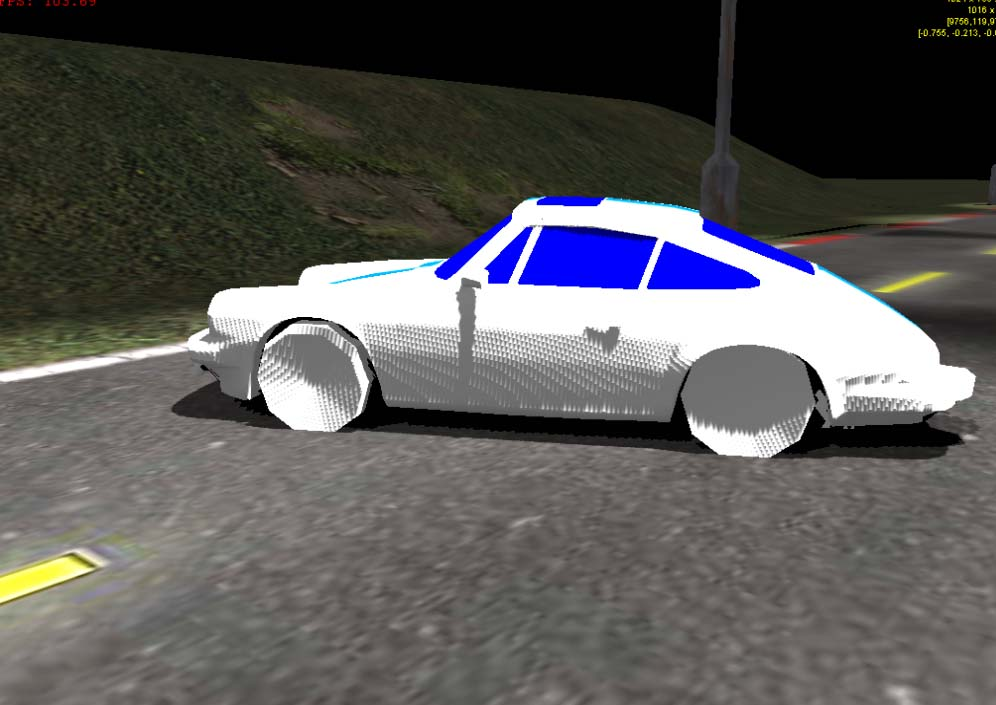
Obrázek 2.9: Rozkostièkování stínu - díky diskrétnosti hloubkové textury a skoro paralelním hranám nastává kostièkovı efekt v závisloti na tom, do jakého pixelu hloubkové textury se pøi testu stínování na daném pixelu zrovna trefí.
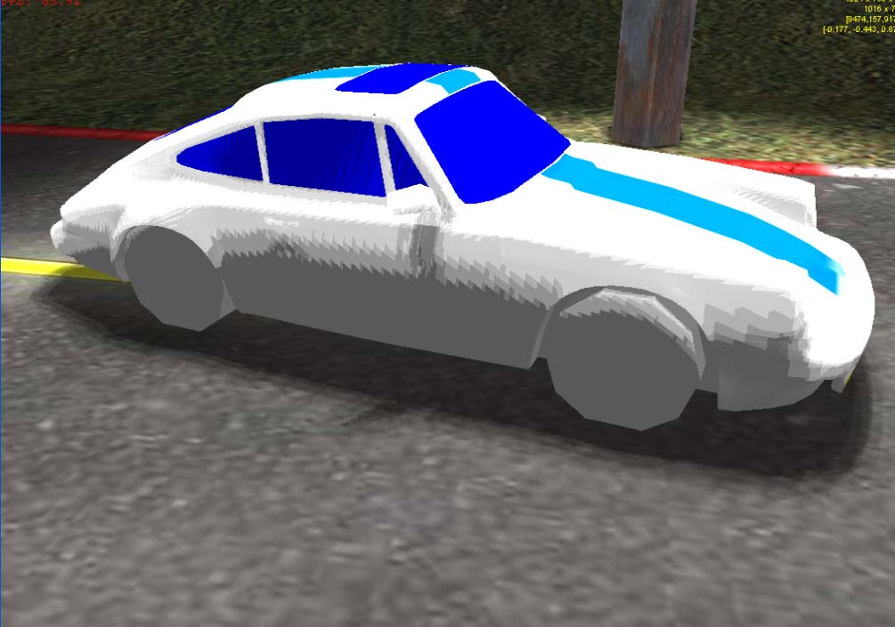
Obrázek 2.10: Další druh problému - pila na okrajích hran jednotlivıch stupòù stínù, kterı vznikl pokusem vyøešit pøedchozí problém zavedením speciálního filtrování, které dokázalo rozlišit 4 stupnì barevnosti stínu.
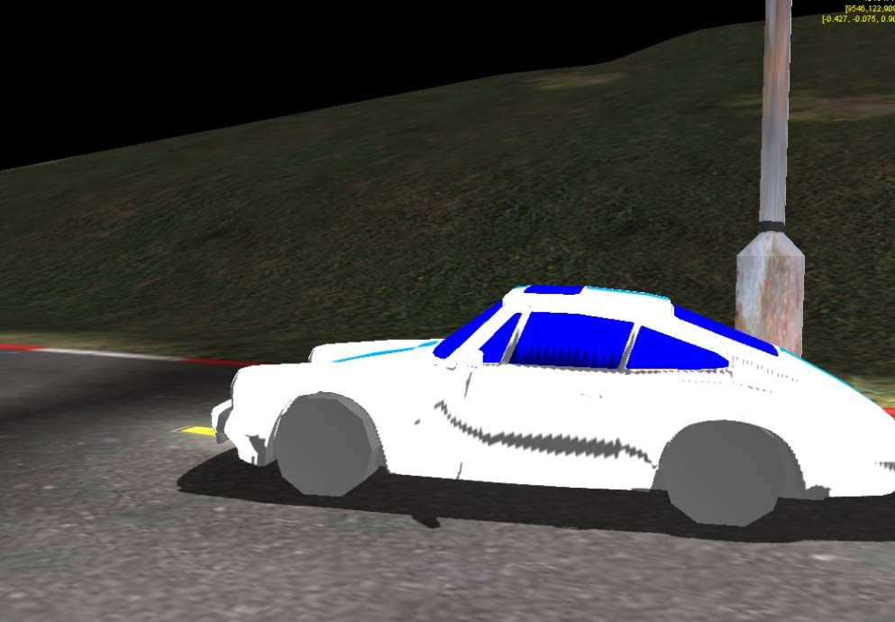
Obrázek 2.11: I takto bizardních stínù se v prùbìhu zkoušení povedlo docílit.
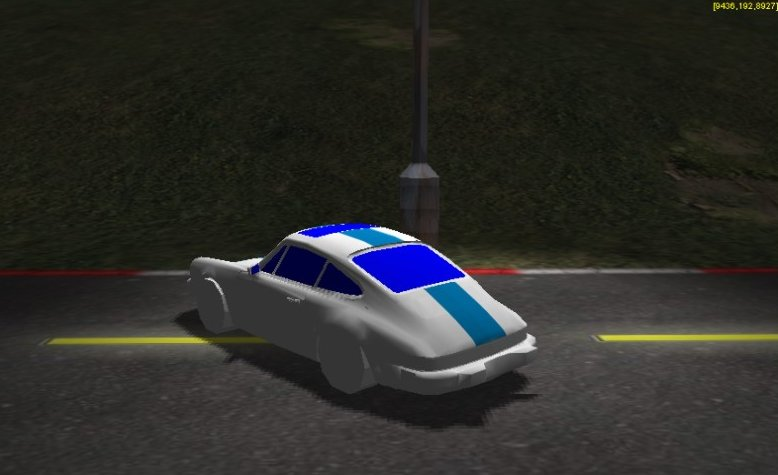
Obrázek 2.12: Vısledek pou�ití hloubkové textury s malım rozlišením a vícestupòového stínování.

Obrázek 2.13: Vızkum vrhání stínù byl rozsáhlı. Zde je ukázka pou�ití pokroèilé techniky filtrování stínu, která vytváøí mìkkı okraj stínu. Tato technika není v koneèné verzi pou�ita, proto�e je pøíliš nároèná na grafickı hardware. Je však implementována.
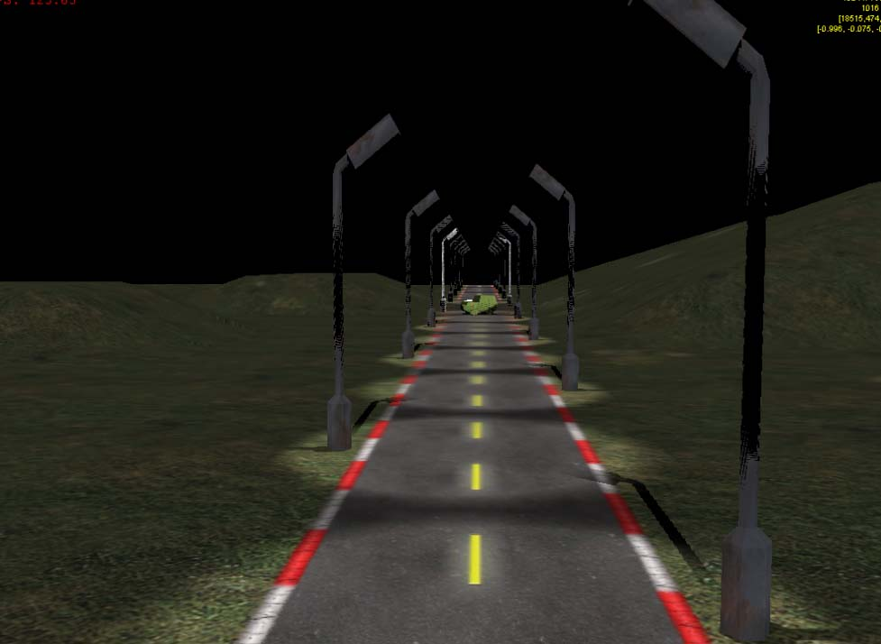
Obrázek 2.14: I stín od lampy se umí poøádnì zkazit. Zde se jedná o pokroèilou techniku stínování pomocí shadow map, která byla publikována teprve v roce 2004. Její název je trapezoidal shadow mapping. V zadu je potom vidìt zelené auto, kde speciálnì vadí stìny rovnobì�né se smìrem svìtla.

Obrázek 2.15: Snaha o zastínìní sebe sama (tzv. self-shadowing).
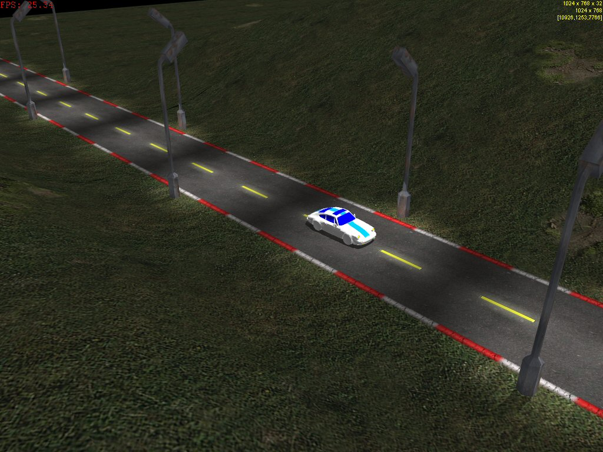
Obrázek 2.16: Jedinı dochovanı obrázek se stínem pomocí shadow volume. Technika je stále implementována, ale nìkteré zmìny provedené v jádru zobrazovacího procesu ji nedovolují pou�ít bez èasovì nároènıch úprav.
Nejvìtší problémy, které se ani ve finální verzi nepovedlo úplnì odstranit, byly se stìnami, které jsou témìø rovnobì�né se zdrojem svìtla. Po èase jsme objevili chybu v osvìtlovacím modelu, která omylem zpùsobovala to, �e plochy, které nemìly bıt osvìtlené, osvìtlené byly. Po odstranìní této chyby se mnoho artefaktù skrylo do vzniklého stínu a tudí� nejsou ve finální verzi ve vìtšinì pøípadù vidìt. Tento problém èásteènì takté� eliminuje zvıšení rozlišení hloubkové textury. Další problém zpùsobuje samotnı hloubkovı buffer, jeho� pøesnost není neomezená. Zvláštì pokud se jedná objekty osvìtlené ku�elovım svìtlem (je na autech, lampách), vzniká pøi transformaci perspektivní maticí, která kopíruje tvar ku�elového svìtla, efekt nakupení hloubkovıch hodnot vzdálenıch objektù. Transformace perspektivní matice má toti� takovou vlastnost, �e hloubkovou hodnotu (øíkejme ji dále souøadnice z) pøemapuje z lineární na logaritmickou škálu. Tento efekt zpùsobí, �e máme velké hloubkové rozlišení objektù v blízkosti svìtla, ale za to malé hloubkové rozlišení objektù dále od svìtla. Celá z-souøadnice se navíc pøemapovává do intervalu 0 - 1. (0 nejbli�ší, 1 nejvzdálenìjší) Pøièem� perspektivní tranformace funguje tak, �e pøevádí jehlan (pozorovatel je ve špièce jehlanu a dívá se do støedu základny) ze pøedu omezenı rovinou (near plane) a ze zadu omezenı rovinou (far plane) do kvádru. Body na near plane se namapují na hloubku 0. Body na far plane se namapují na hloubku 1. Souøadnice x a y z vnitøku jehlanu se namapují do interevalu od -1 do 1. To je zobrazeno na obrázku 2.17.
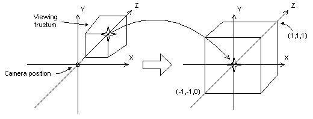
Obrázek 2.17: Nákres prùbìhu perspektivní transformace. Pøevzato z dokumentace k Direct3D.
Jak ji� bylo napsáno vıše, provádí se pro ka�dı pixel v prostoru svìtla porovnání hloubek. Jestli�e jsou ale hloubky pøíliš blízko, porovnání vrátí v nìkterıch pøípadech špatnı vısledek a stín se objeví tam, kde nemá. Z tohoto dùvodu se zavádí bias (posun objektù o urèitou vzdálenost), aby se zajistilo to, �e plochy které mají bıt osvìtlené v�dy budou a chyba se pøevedla na stranu stínu, kde se mù�e stát, �e tam kde má bıt stín, stín není. To ovšem vadí mnohem ménì, ne� pøípad, kdy se objeví stín na místì, které má bıt osvìtlené. Nám se osvìdèil bias okolo 15 centimetrù. Trvalo nám ovšem nìjakı èas, ne� jsme pøišli na nejvhodnìjší zpùsob, jakım bias aplikovat. Pokusy jsme provádìli s pøièítáním malé hodnoty pøímo v testu porovnání, ale vzhledem k logaritmické škále hloubky se to neosvìdèilo. Jako nejlepší se osvìdèilo posouvat dozadu objekty pøi renderování z pohledu svìtla o vıše zmiòovanou hodnotu. Alternativní mo�ností k biasu je renderování odvrácenıch stìn modelu do hloubkového bufferu. Tuto mo�nost jsme také zkoušeli, ale vısledek byl ve vìtšinì pøípadù horší ne� øešení s biasem a tato metoda závisí na geometrii modelu. Tuto metodu jsme nakonec vùbec nepou�ili.
Obecnì se doporuèuje posunout near plane, co nejvíce k modelu nebo modelùm, ke kterım se sna�íme získat hloubkovou mapu. Tuto techniku jsme nepou�ili, proto�e vy�aduje mít kolem ka�dého objektu nìjakou obálku minimálnì osovì orientovanı obalovı kvádr. V nìkterıch technickıch paperech publikovanıch na siggraphu se doporuèuje hloubku nejdøíve vyrenderovat, a potom celou hloubkovou mapu projít a najít nejmenší hodnotu. Tento pøístup je ale zcela prakticky nepou�itelnı a naprosto a úplnì ho nedoporuèujeme (z dùvodu nepou�itelnosti jsme ho dokonce ani nezkoušeli, i kdy� jsme testovali kde co). Osvìdèila se nám ale hodnota near plane vzdálenosti 10 cm od pozorovatele. Jinak silnì nedoporuèujeme nastavovat near plane do vzdálenosti menší ne� je jedna jednotka zvolená jako základní. Z poèátku jsme mìli near plane ve vzdálenosti 0,1 cm od pozorovatele a taková hodnota pøímo nesedìla perspektivní matici a celá perspektivní transformace se nechovala vzhledem k nakupení hloubkovıch hodnot dobøe.
Obecnì se dá øíci, �e pøesnost hloubkové textury musí bıt aspoò 24 bitù, aby se dalo uva�ovat o slušném stínování objektu na sebe sama (napøíklad zrcátko auta vrhající stín na dveøe od auta). Pøi 16 bitové pøesnosti se dá uva�ovat jenom o stínování objektù bez stínování sebe sama.
Rozsáhle jsme takté� experimentovali s rùznım zpùsobem filtrování stínù. V základní verzi shadow mappingu se v�dy na jeden pixel obrazovky bere jenom jeden vzorek z hloubkové textury a ten se následnì porovnává s hloubkou bodu v perspektivním prostoru svìtla. To umo�òuje dvì pozije - je stínováno a není stínováno. Je ovšem mo�né vzít více vzorkù (samplù) z hloubkové textury, ka�dı následnì porovnat s hloubkou bodu v perspektivním prostoru svìtla. Tím dostaneme více informací o tom, je-li na daném políèku stín. Napøíklad pro 9 vzorkù získáme 9 úrovní odstupòování stínu. Pøedstavuje to ovšem vìtší zátì� pro program pixel shaderu. Tato technika se nazıvá percentage-closer filtering. Experimentovali jsme s poètem vzorkù na møí�kách 2x2 a 3x3 v rùznıch uskupeních, jak pravidelnıch, tak vygenerovanıch pomocí náhodného generování technikou roztøesení (jitter). Zjistili jsme, �e se pomocí této techniky dají vytvoøit pìkné mìkké stíny na okrajích zvláštì s pou�itím møí�ky 3x3 s dostateènou velikostí bunìk møí�ky a generované technikou roztøesení. Nakonec jsme však vısledky nepou�ili, proto�e to bylo pøíliš nároèné na grafickı hardware.
Spoleènost NVIDIA na svıch grafickıch kartách zavedla hardwarovou podporu shadow mappingu. Tuto podporu jsme se rozhodli vyu�ít, proto�e vıraznì sni�uje nároky na grafickou kartu a ještì navíc témìø zadarmo dává mìkké okraje stínù, bohu�el jenom na velmi krátkou vzdálenost. Pøechod je však plynulı - mnoho odstínu stínu. Proto�e ale ostatní spoleènosti vyrábìjící grafické karty v èele s ATI tuto podporu shadow mappingu nemají, vy�adovalo veškeré stínování psát dvojí pixel shadery jedny pro NVIDII a druhé pro ostatní grafické karty. Vìøíme, �e toto pøidalo na profesionalitì i kráse našeho projektu.
Proto�e shadow mapy nedovolují ve své základní verzi ostínovat dostateènì velkou plochu, kterou je potøeba ostínovat v pøípadì �e zdrojem svìtla je slunce, implementovali jsme novou techniku, která vylepšuje shadow mapping. Tato technika se jmenuje trapezoidal shadow mapping (lichobì�níkové shadow mapy) a byla poprvé pøedstavena vìøejnosti v paperu, kterı se jmenuje: Anti-aliasing and Continuity with Trapezoidal Shadow Maps - Tobias Martin and Tiow-Seng Tan - Eurographics Symposium on Rendering (2004). Tato technika je zalo�ena na faktu, �e celá plocha hloubkové textury není de facto úplnì vyu�ita. Ve standardním shadow mappingu existují místa zvláštì, pokus se jedná o stíny od slunce, která jsou úplnì mimo zornı úhel pozorovatele a pøesto se ve hloubkové textuøe nachází. Technika trapezoidal shadow mappingu nalezne lichobì�ník, kterım obalí oblast na, kterou se pozorovatel dívá a pouze hloubková informace z této oblasti uvnitø lichobì�níku se ulo�í do hloubkové textury. Navíc se prostor textury vyu�ívá tak, �e bli�ším objektùm k pozorovateli je dáno na textuøe více místa ne� vzdálenım objektùm od pozorovatele. To zaruèuje lepší rozlišení stínu blí�e k pozorovateli. Tohoto prostorového vyu�ití textury se dosáhne remapováním logaritmické hloubkové škály.
Ve høe rozlišujeme 3 druhy stínù podle toho, z jakého zdroje svìtlo pochází a to:
Stínování od slunce se provádí pouze v denním re�imu pomocí trapezoidal shadow mappingu. Stínování od lamp a aut se provádí pouze v noèním re�imu pomocí standardních shadow map.
Stínování jako takové je implementováno pøímo v grafickém jádru ve tøídìCGraphic a to pro ka�dı pøípad (slunce, auta, lampy) zvláš�. Stíny od ka�dé z tìchto kategorií si vy�adují zvláštní pøístup. Jako pomocné tøídy pro geometrické vıpoèty se pou�ívají tøídy CShadowMapping, TSM a ConvexHull. Vztahy jsou takové, jak popisuje obr. 2.18. Tøída CGraphic, která má za úkol samotné renderování, volá jako pomocné tøídy zejména pro geometrické vıpoèty tøídy CShadowMapping a TSM. Tøída TSM ještì pou�ívá algoritmus konvexního obalu, kterı je implementovanı ve tøídì ConvexHull.
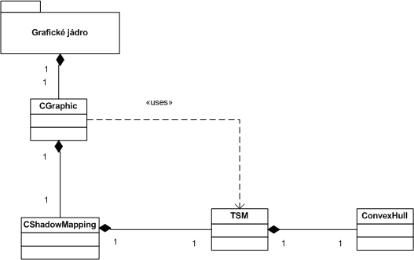
Obrázek 2.18: Schéma stínovacího systému aplikace
Pro stínování od slunce se pou�ívá algoritmus trapezoidal shadow mappingu. Základ stínování od Slunce je implementován ve tøídì CGraphic ve funkci RenderDayScene(). Z tohoto místa se posléze volají další pomocné funkce. Prùbìh algoritmu stínování je následovnı:
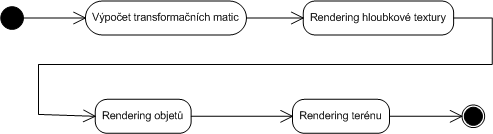
Obrázek 2.19: Prùbìh renderování stínù od Slunce.
Aby nedošlo ke stínování mimo vymezenou plochu. Je v kroku 4 renderování hloubkové textury nastanena ochranná oblast o velikosti jednoho pixelu kolem celé hloubkové textury. Tato ochranná oblast zabezpeèuje, �e se nevystínuje nic mimo vymezenou plochu.
Trapezoidal shadow mapping je specifická stínovací technika, která vylepšuje vzhled stínù lepším vyu�itím prostoru hloubkové textury a remapováním škály hloubkové souøadnice. Nejvíce práce dá spoèítat transformaèní matici do lichobì�níkové prostoru. (tj. matici transformující lichobì�ník obklopující pohledovı jehlan na ètverec) a nalézt samotnı lichobì�ník. Funkce ComputeTSMMatrix() je nejdùle�itìjší funkcí tøídy TSM. V této funkci probíhá hledání lichobì�níku z pohledu slunce obklopujícího ve 2D pohledovı jehlan. Hledání lichobì�níku je provádìno ve shodì s popisovanou technikou v technickém paperu Anti-aliasing and Continuity with Trapezoidal Shadow Maps a vypadá následovnì:
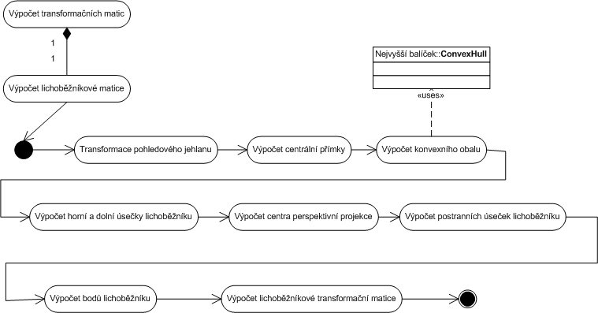
Obrázek 2.20: Prùbìh vıpoètu lichobì�níkové matice
Pro bli�ší porozumìní popisovanému vıpoètu lichobì�níkové matice prostudujte vıše zmiòovanı tech paper nebo hledejte na internetu další zdroje.
Proto�e celı tento geometrickı vıpoèet obsahuje místa, kdy se mù�e zkazit. Jsou to rùzné pøípady degenerace. Pakli�e by to nastalo pou�ije se místo trapezoidal shadow mappingu axis-aligned shadow mapping, kterı se získá najitím obdelníku, do kterého spadá pohledovı jehlan pozorovatele. Ovšem v praxi se tato náhradní metoda zatím nemusela nikdy pou�ít. Vıpoèty se zdají bıt numericky stabilní a nekazí se.
Algoritmus vıpoètu 2D konvexní obálky pracuje tak, �e najde minimální bod ve smìru y a pøidá ho do konvexní obálky. A potom zkoumá úhel mezi pøedešlım vektorem (na zaèátku vektor (1,0), jinak vektor mezi minulım bodem pøidanım do konvexní obálky a nynìjším bodem pøidanım do konvexní obálky.) a vektorem smìøujícím od nynìjšího bodu pøidaného do konvexní obálky k ostatním bodùm. Bod mající nejmenší takovı úhel je dalším pøidanım do konvexní obálky. Jestli�e dva body mají nejmenší úhel, rozhoduje vìtší vzdálenost bodù.
Stíny od lamp se poèítají pouze v re�imu noci. Stínování od lamp se zapíná ve chvíli, kdy pod lampu vjede auto nebo se vkutálí nìkterı z dynamickıch objektù, jinak je stínování od lamp vypnuté. Ani svìtlo od lamp se nepoèítá, jestli�e pod lampou není auto nebo nìjakı dymanickı objekt. Svìtlo od lamp se nikdy nepoèítá na terénu, na terén je namapována light mapa od lampy (svìtelná mapa od svìtla lampy). V pojednání o typech svìtel, které jsme pou�ili v projektu se dá nalézt podrobnìjší popis druhù svìtel a zpùsobù osvìtlení scény - viz kapitola Svìtla. Stínování lamp se vztahuje na typ svìtel LT_LAMP. Omezme se nyní na pøípad, kterı nás zajímá, a to renderování stínu od svìtla lampy. Jestli�e se zapne renderování svìtla a stínu od lampy, svìtlo od lampy se ke scénì pøièítá. Tam kde je stín se ke scénì nic nepøièítá. Aby se k terénu nepøièetla textura lightmapy dvakrát, je nutné mít mechanismus, kterı na èas bì�ného renderování terénu light mapu z políèka pod lampou vyøadí. Takovım mechanismem je funkce ExcludeLightMapRendering() tøídy CGraphic, která má za úkol detekovat dynamické objekty nacházející se pod lampou a v pøípadì, �e se tam takovı objekt nachází, vyøadit z políèka pod lampou light mapu od svìtla lampy. Samotné renderování stínu od svìtla lampy pak zajiš�uje funkce RenderNightScene() tøídy CGraphic voláním funkce RenderDynamicShadowMapForLamp(). Renderování se provádí do èásti hloubkové textury. Jak velká èást hloubkové textury se pou�ije závisí na vzdálenosti pozorovatele od lampy. Rozsah je od 256x256 a� do 1024x1024 pixelù. Postup pøi renderování stínù od svìtla lampy se dá shrnout následovnì:
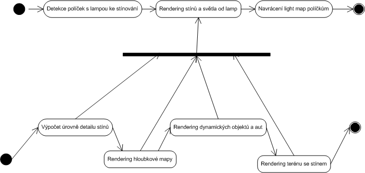
Obrázek 2.21: Schéma renderování stínù a svìtla od lamp
Stejnì tak jako u stínù od slunce se na hloubkovou textruru aplikuje jednopixelová ochranná zóna.
Stíny od svìtel od aut se poèítají pouze v re�imu noci. Stíny od aut se aplikují na svìtla typu LT_CAR. Nebylo by reálné vrhat stíny od všech aut. Omezili jsme poèet stínovanıch aut na 4 nejbli�ší z pohledu pozorovatele. Navíc se auta stínují jenom v urèité oblasti kolem pozorovatele. Asi do 100 metrù vzdálenosti. Ka�dému autu je pøidìleno 512x512 pixelù z hloubkové textury. Uva�ovali jsme i o zavedení úrovnì detailù, avšak èas nezbyl na její implementaci. Zejména by šlo o to najít dobrou metriku, která zohledòuje i to, �e stín od vzdáleného auta mù�e bıt vrhán smìrem k pozorovateli. Stíny od auta pøedstavují další problém a to takovı, �e není vhodné pou�ívat pixel shaderovı program, kterı by poèítal všechny ètyøi stíny od auta po celé stínované ploše. Nestává se tak èasto, �e by všechna ètyøi svìtla od auta svítila na jedno místo zvláštì pokud tam tolik aut ani není. Proto se musí ještì pøed zapoèetím samotného renderování vyhodnotit na jaká políèka terénu svítí svìtla od jakıch aut. Ze zaèátku se tedy obalí ka�dı ku�el svìtla od auta osovì rovnobì�nım obdelníkem (axis aligned rectangle). A potom se provede vıpoèet prùnikù tìchto osovì rovnobì�nıch obdelníkù. Mù�e jich bıt a� 4 jako poèet stínovanıch aut. K tomuto vıpoètu prùniku slou�í tøída CRectangleInclusion, která pracuje na principu bitové mapy v dané oblasti, která mù�e bıt stínována. Ka�dému obdelníku se pøidìlí èíslo 2n, kde n je èíslo obdelníku. Ka�dı obdelník se projde po jednotlivıch políèkách mapy a ke ka�dému takovému políèku se pøiètì èíslo pøidìlené danému obdelníku. Po projití všech obdelníku tak ka�dé políèko bitové mapy obsahuje èísla obdelníkù, kterıch je souèástí. Tato informace se posléze pou�ije na nastavení správné slo�itosti pixelového a vertexového programu. Existují tak 4 vertex shader programy a 8 pixel shader programù pro terén. A stejnı poèet shaderovıch programù pro objekty. Poèet pixel shader programù je dvojnásobnı, proto�e jak u� bylo vıše uvedeno implementujeme v�dy jednu sadu pixel shaderovıch programù pro grafické karty spoleènosti NVIDIA a druhou pro ostatní grafické karty.
Postup renderování stínù a svìtla pro svìtla od auta je tedy následovnı ve funkci RenderNightScene() tøídy CGraphic:

Obrázek 2.22: Schéma renderování stínù a svìtla od aut
Technika shadow mappingu má ještì jednu nepøíjemnou vlastnost, která vyplıvá z faktu, �e hloubková mapa se do scény projektuje pomocí texturové projekce. Tato metoda texturové projekce má toti� tu nepøíjemnou vlastnost, �e se textura projektuje, jak dopøedu �ádanım smìrem, tak dozadu ne�ádanım smìrem. Tomu se øíká zpìtná texturová projekce. Jak u slunce, tak u lamp tento problém nebyl markantní a nebylo ho nutné øešit. Ale u aut se tento problém øešit musí. Jakmile na zadek auta zasvítí svìtlo od jiného auta, ukázaly by se za autem stíny, které tam nemají, co dìlat. Proto se musí do vertexovıch programù pøidat test, kterı zpìtnou projekci odstraní.
Spoleènost NVIDIA na svıch kartách podporuje hardwarovì techniku shadow mappingu. Navíc, pokud je zapnuto lineární filtrování hloubkové textury, je v grafickıch kartách spoleènosti NVIDIA implementován algoritmus filtrování s názvem fake PCF. Tento algoritmus vezme ètyøi vzorky z textury, provede jejich porovnání a nakonec vısledky (stín, svìtlo) je interpoluje mezi sebou. Tím vytváøí spojitı pøechod (jak dovolí pøesnost floatu) mezi stínem a svìtlem. Tato hardwarová podpora vıraznì napomáhá vıkonnosti techniky shadow mappingu a produkuje pìknì vypadající hrany stínù. Proto jsme se ji rozhodli pou�ít, i kdy� to znamenalo napsat mnoho speciální ch pixel shaderovıch programù pro grafické karty spoleènosti NVIDIA.
Na ostatních kartách jsme tuto metodu fake PCF implementovali pro stíny od slunce ve dne v pixel shaderech. V pøípadech, kdy se pozorovatel dívá proti slunci nebo po smìru slunce, nepøináší technika trapezoidal shadow mappingu velkou vıhodu oproti standardním shadow mapám. A mù�e se stát, �e rozlišení textury je nedostateèné a stíny nebudou vypadat pìknì. Technika filtrování fake PCF tuto nedostateènost stínù do velké míry doká�e skrıt, proto se vyplatilo ji pro stíny od slunce implementovat. Rozdíl mezi situací pohledu ve smìru svìtla slunce a kolmo ke smìru slunce si mù�ete prohlédnout na následujících ilustraèních obrázcích.
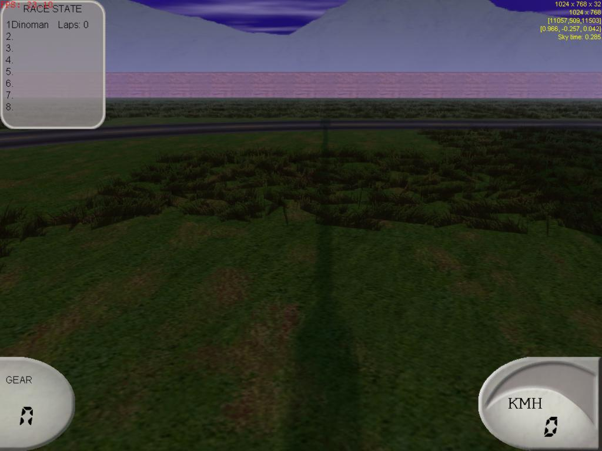
Obrázek 2.23: Dueling frustra pøípad u trapezoidal shadow mappingu. Fake PCF filtrovaní krajù stínu pomáhá skrıvat nedostateènost, rozkostièkování stínu.
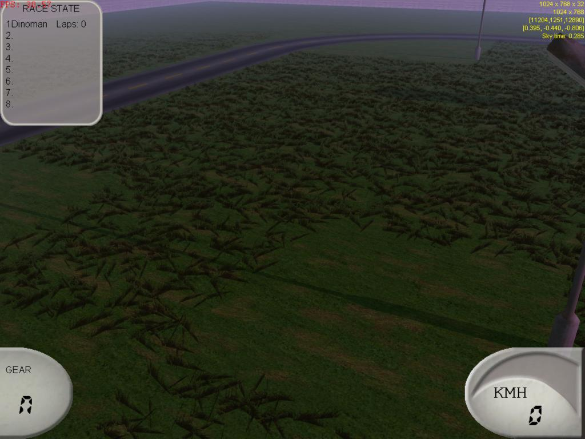
Obrázek 2.24: Pøípad, kdy je trapezoidal shadow mapping efektivní. �ádné rozkostièkování stínu, naprostá dostateènost rozlišení textury díky lichobì�níkovému mapování.
Vıvoj stínování byl jedním z nejnároènìjších problémù, které se v našem projektu musely øešit. Trvalo nám dva roky, ne� jsme dosáhli nynìjší úrovnì kvality stínování. Aèkoliv se mù�e zdát, �e rùznım chybám ve stínování, se kterımi jsme se setkali, byla vìnována velká èást dokumentace, pova�ujeme tuto èást dokumentace za nedocenitelnı zdroj informací pro všechny vıvojáøe, kteøí se kdy budou pokoušet stínovací systém implementovat. Doufáme, �e jak náš kód, tak naše poznatky v otázce stínování pomohou ostatním vıvojáøùm kvalitnì a úspìšnì implementovat stínovací systém. Jak je z uvedeného popisu vidìt, je konkrétní implementování jednotlivıch druhù stínu závislé na povaze svìtla a zdroje svìtla (auta, lampy, slunce). A pro ka�dı takovı pøípad se musí zvoilt specifickı pøístup. Druhou mo�ností je implementovat obecnı stínovací systém, kterı se bude sna�it nìjak jednolivé stínovací úkony prioritizovat. To ale vy�aduje ještì vìtší míru abstrakce, vıvoj je slo�itìjší a vısledek se musí nìjak šíkovnì optimalizovat na jednotlivé pøípady. Pøináší to s sebou celou øadu problémù s nejasnım koncem, kdy se mù�e ukázat, �e vısledek není dostateènì rychlı.
Aèkoliv naše stíny nejsou v�dy dokonalé, vìøíme, �e jejich kvalita je ve vìtšinì pøípadù dostateèná a �e u� z povahy pou�ité metody a problémù, které pøináší, jsme udìlali maximum, aby vısledek byl kvalitní a vyvá�enı.
Ji� bylo vzpomenuto, jak velkou úlohu hraje terén v zobrazovacím procesu. Pro jeho dùle�itost jsme vìnovali zvláštní pozornost nejen implementaci všech algoritmù s ním souvisejících, ale pøedevším vhodnému návrhu. Zde se pokusíme zaznamenat zásadnìjší rozhodnutí, která jsme uèinili, dùvody, které nás k tomu vedly, a také nastínit jiné mo�nosti, které se nabízely.
Nejzásadnìjším rozhodnutím, které jsme museli provést ji� v poèátku celého projektu, bylo, zda bude terén tvoøen skládáním pøeddefinovanıch èástí, èi zda bude mo�né utvoøit zcela libovolnı terén. Bylo potøeba zhodnotit klady obou pøístupù:
Nejvíce do koneèného rozhodnutí promluvila èasová nároènost naprogramování editoru terénù i map. Navíc jsme usoudili, �e pro podobnı styl hry je políèkovı systém, kterı jsme nakonec zvolili, zcela pøirozenı, a pøedevším, �e pøi dobrém návrhu editoru a formì vstupních dat bude mo�né vlastní terén ve høe pøesto uplatnit (momentálnì je to mo�né vytvoøením modelu a vlo�ením terénu do mapy na rovnou plochu jako objekt). Museli jsme také dohodnout z jakıch typù polí se bude mapa skládat, jak bude jedno pole velké, jaké budou vıškovì úrovnì atd. Rozhodnutí šla cestou kompromisù mezi vzhledem a slo�itostí implementace, hlavním argumentem však byla v�dy hratelnost. Rozhodnuto bylo pro pole o ètvercovém pùdorysu s délkou strany 10 metrù. Ka�dı terén mìl bıt slo�en z instancí rùznì tvarovanıch ploch (budeme jim øíkat pláty) sestavenıch tak, aby na sebe navazovaly. Prototypù tìchto plátù bylo v programu Maple vhodnımi funkcemi vytvoøeno celkem 115. Vytváøeny byly na základì po�adavkù na geometrii po stranách tìchto plátù, tj. urèilo se, jakımi køivkami na sebe budou pláty navazovat a vytvoøily se všechny kombinace rozlo�ení tìchto køivek po stranách plátù. Jeden pøíklad za všechny ukazuje obrázek 2.25. Program Maple poslou�il pouze pro zobrazování vytvoøenıch funkcí, terény samotné pak byly generovány k tomu napsanou utilitou Terrain Generator.
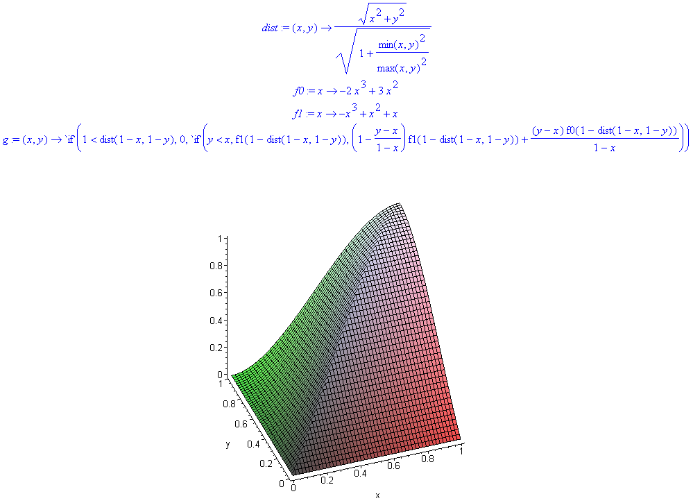
Obrázek 2.25: Jeden ze 115 vytvoøenıch plátù terénu vèetnì vytvoøující funkce.
Hlavními problémy, které s terénem souvisely a se kterımi se bylo tøeba potıkat, byly tyto:
Po zavedení úrovnì detailu pro terén se vıraznì sní�il poèet transformovanıch vrcholù, nicménì rychlost zobrazování nevzrostla nikterak vıraznì. Problém byl v zobrazování terénu po jednotlivıch polích. Zobrazení ka�dého takového pole obnášelo nastavení správné textury, transformaèní matice, zdrojovıch bufferù s daty o vrcholech a koneènì zavolání správné renderovací funkce knihoven DirectX. To všechno pro pouhé dva trojúhelníky reprezentující jedno pole terénu v jeho nejni�ší úrovni detailu. Dnešní grafické karty jsou schopny zpracovat a� miliardu vrcholù za vteøinu, ale u� jen zmínìné operace vezmou v prùmìrném pøípadì nìkolikanásobnì více èasu ne� samotné transformace vrcholù. Renderování terénu o 10 tisících polí tímto zpùsobem bylo nemo�né, ale zároveò nebylo mo�no uchovávat celı terén v pamìti a renderovat jej tak pomocí ni�šího poètu volání funkcí. Øešením se ukázalo vytvoøení speciální struktury, kterou jsme nazvali LOD0, která obsahovala geometrii celého terénu jako jednoho objektu, ale pouze v jeho nejni�ší kvalitì. V mapì velikosti 100x100 polí bylo tedy dohromady pouze 20000 trojúhelníkù a všechny se vyrenderovaly v jediném bìhu. Rychlost se zvıšila dramaticky, pøesto však bylo stále tøeba øešit øadu otázek.
Nejprve bylo potøeba vyøešit problém, jak nalo�it s blízkımi èástmi terénu, které je potøeba zobrazit ve vyšší kvalitì, tedy ne pomocí LOD0. Nejschùdnìjší cestou bylo dvoufázové zobrazení. V první fázi se vyrenderuje celı LOD0 jako podklad, pak se vyma�e obsah bufferu hloubky (z-bufferu) a ve druhé fázi se vyrenderují ta pole, která jsou blízká pozorovateli, ještì jednou, tentokrát ve vyšší kvalitì. Zde je potøeba si uvìdomit, proè je nutné vymazat mezi jednotlivımi fázemi z-buffer (pou�ijeme zjednodušenı 2D náhled): Nìkteré pláty jsou generovány konvexní funkcí. Plát, vzniklı interpolací pravidelnì odebranıch vzorkù této funkce, je reprezentován lomenou èarou, která le�í nad pùvodní funkcí. Sní�ením poètu vzorkù (které se dìje pøi sni�ování LODu) zjednodušíme lomenou èáru a novì vzniklá lomená èára bude opìt le�et celá nad pøedchozí èlenitìjší verzí. To znamená, �e pozorovatel nahlí�ející na scénu seshora (pozorovatel se pohybuje po terénu, ne pod ním) uvidí v�dy lomenou èáru vzniklou nejni�ším vzorkováním. Popsanou situaci demonstruje následující obrázek.
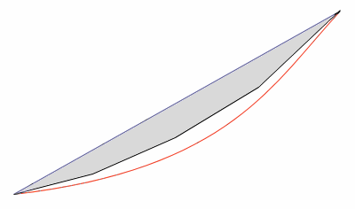
Obrázek 2.26: Problém pøekrytí terénu terénem ni�ší úrovnì detailu. Èervenì je zobrazena pùvodní funkce, z ní� byl navzorkován povrch terénu vyšší kvality (èernì) i povrch pro LOD0 (modøe). Šedá plocha znázoròuje prostor mezi jednotlivımi úrovnìmi detailu.
Rozdìlení zobrazení terénu na dvì fáze, mezi nimi� se ma�e obsah z-bufferu, vyøešilo problém pohledu seshora na terén, i kdy� mìlo za následek ještì nìkolik drobnìjších problémù, které bylo nutno øešit a o kterıch se lehce zmíníme v èásti popisující celı renderovací proces. Zde však rozebereme problém vìtší, a to objevování artefaktù nad terénem pøi pohledu ze strany. Promazání z-bufferu je toti� øešení zalo�ené na tom, �e vùbec existuje nìjakı pixel, kterı je mo�no zobrazit pøes pixel získanı zozbrazením LOD0 (Takovı pixel je z pohledu pozorovatele za pixelem z LOD0 a promazání z-bufferu mu umo�ní dostat se na obrazovce pøed nìj.). Kdy� se ale podíváme na obrázek 2.26 ještì jednou a pozornìji, uvìdomíme si, �e právì z tohoto pohledu (tj. z bokorysu) je vidìt povrch terénu tak, �e v jistém úseku (v obrázku zaznaèen šedou barvou) neexistuje �ádnı pixel terénu vyšší kvality, kterı by se mohl nakreslit pøes pixel z LOD0. Nejlépe to ilustruje obrázek pøímo ze hry, kterı ukazuje, �e popsanı problém se skuteènì dìje.
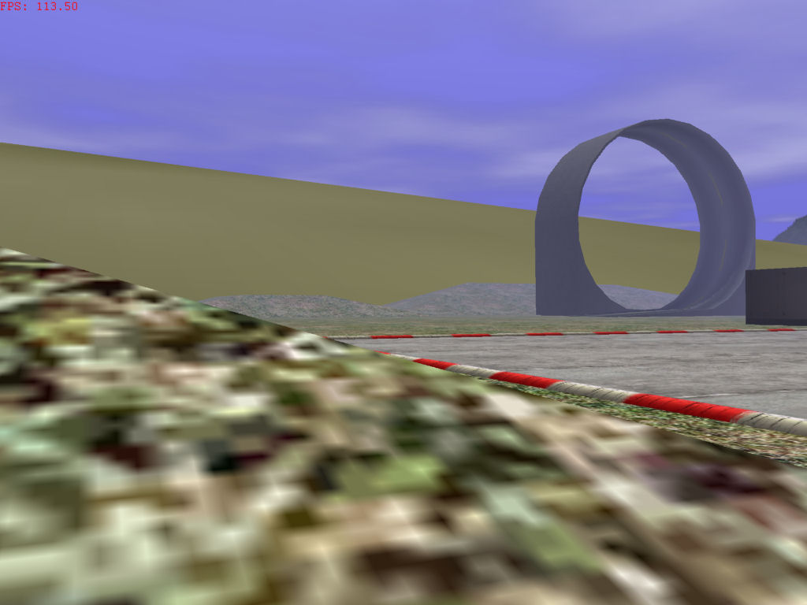
Obrázek 2.27: Artefakt vzniklı dvojitım renderováním terénu v rùznıch kvalitách.
Øešením tohoto problému jsme se nìjakı èas zabıvali a nalezli jsme zpùsob, jak danı problém potlaèit (èi odstranit docela). Pøi vytváøení geometrie pro LOD0 jsme na kritickıch místech (jsou to nìkterá - ne všechna - pole generovaná konvexní funkcí) pou�ili o nìco vyšší kvalitu terénu. Tím se zmenšil rozdíl (prostor) mezi geometrií LOD0 a skuteènım terénem. Zkoušeli jsme pou�ít rùzná nastavení kvality v tìchto místech a experimentovali s tím, na jaké pláty (typy polí) tuto metodu aplikovat. Vısledek však nebyl plnì uspokojující. Se zvyšujícím se nastavením kvality se sice artefakty zmenšovaly èi mizely, ale vıraznì rostla vıpoèetní slo�itost generování geometrie pro LOD0 (vıpoèet dosahoval na velkıch èlenitıch mapách doby a� jedné minuty) a zároveò se zvyšovala jeho komplexita, co� se mírnì odrá�elo na rychlosti renderování a velmi na pamì�ovıch nárocích. Nakonec jsme naznali, �e necháme problém le�et a budeme jej øešit a� ve finální podobì hry, bude-li tøeba. To se posléze ukázalo jako u�iteèné rozhodnutí, nebo� vyšší posazení kamery nedovoluje hráèi dostat se do nejkritiètìjších pohledù, celkové sní�ení terénu (jako nutnı ústupek modulu fyziky) zmenšilo také velikost artefaktù a s implementací trávy se zamaskovaly artefakty natolik, �e je zpravidla nutné je hledat.
Pro vytvoøení struktury LOD0 jsme se rozhodli navrhnout tøídu CGeometryReducer, která mìla umìt:
Tøída CGeometryReducer byla navr�ena tak, �e vstupem pro ni budou trojúhelníky zadávané souøadnicemi trojic vrcholù, k internímu uchování geometrie bude pou�ita struktura winged edge s omezením definice stìny na trojúhelník (Pozn.: Winged edge je obecnì pou�ívanım pojmem v poèítaèové grafice. Podrobnı popis je mo�né najít na mnoha místech na Internetu.), vıstupem budou kopie interních bufferù a standardní buffery knihoven DirectX a redukce komplexity geometrie bude provedena na základì sjednocení blízkıch vrcholù, kde definice blízkosti vrcholù bude vstupním parametrem pro algoritmus redukce. Postupnì jsme splnili body 1, 2, 3, 4, a 6 zmínìnıch po�adavkù. Algoritmus sdru�ování blízkıch vrcholù a triangulace vzniklıch dìr mìl po øadì optimalizací èasovou slo�itost O(N*logN + M), kde N je poèet vrcholù geometrie a M poèet hran sítì trojúhelníkù. Pøi aplikaci na geometrii terénu bylo navíc mo�né provést horní odhad poètu hran, tak�e vısledná slo�itost byla pouze O(N*logN). Nicménì ani tato slo�itost nebyla dostateèná, nebo� pøi redukci geometrie terénu se pracovalo s desítkami tisíc vrcholù a vıslednı èas zpracování se nám na velké mapì nepodaøilo sní�it pod 40 vteøin (na pomalejších strojích by to bylo samozøejmì více, co� hráèe rychle odradí). Z tohoto dùvodu jsme implementaci navr�ené obecné tøídy nedokonèili a radìji jsme aplikovali vıraznì snazší postup vyu�ívající znalostí dat, která chceme redukovat (viz dále).
Na vygenerovanı LOD0 nebylo mo�no mapovat textury tak, jak se mapovaly na jednotlivá pole, to by toti� opìt vy�adovalo renderovat LOD0 po èástech. Proto bylo nutné vytvoøit jedinou texturu, která se na povrch namapuje. Pøi horním odhadu velikosti mapy 1000 x 1000 metrù jsme zvolili velikost textury 2048 x 2048 pixelù (hodnota je nastavitelná v konfiguraèním souboru), co� obnáší pøibli�nì pùl metru terénu na jeden pixel - velmi hrubé rozlišení, ale pøi vyšším nastavení komplexity terénu se tato textura aplikuje a� ve vzdálenosti, kde poskytuje dostateènou kvalitu. Textura se generuje pøi naèítání hry po inicializaci celé scény v tìchto krocích:
Vısledná textura samozøejmì nesmí obsahovat objekty, naproti tomu druhotné textury polo�ené na základní texturu terénu zahrnuty bıt musí, proto v textuøe mù�eme rozpoznat napøíklad kudy vede silnici. Nezohledòuje se také naklonìní terénu, vzorky jsou brány pravidelnì, tak�e v pøípadì, �e by byl terén v nìkterém místì velmi strmı, bude jeden pixel textury mapován na daleko vìtší èást terénu v LOD0 zobrazení. Námi generovanı terén však nemá nikde velkı sklon, a zmínìné nepøesnosti proto nelze postøehnout. Pro pøedstavu opìt nejvíce pomù�e zmenšenı obrázek takové textury (viz obr. 2.28).
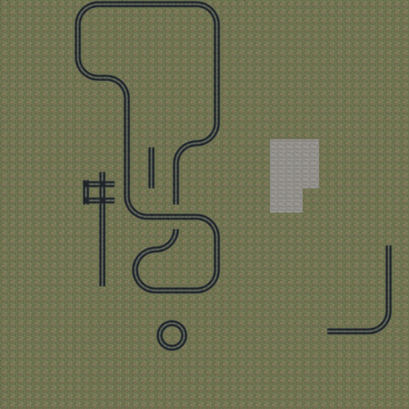
Obrázek 2.28: Vygenerovaná textura pro LOD0 (ve høe defaultnì pou�íváme daleko vìtší rozlišení).
Pøi osvìtlování LODu ji� byl zmínìn problém vznikající aplikací diskrétní varianty LODu na terén. Problém se objevuje v místech, kde je na dvì sousední pole terénu pou�it jinı LOD. Pláty na sebe toti� navazují pouze v rámci stejné úrovnì komlexity, nebo tam, kde je jejich napojením rovná èára. Na obrázku 2.29 jsou jasnì vidìt vzniklé díry, které velmi narušují vnímaní terénu jako jednolitého celku. Za bìhu hry jsou pak díry ještì zøetelnìjší, nebo� se objevují a mizí souèasnì s pohybem pozorovatele scénou.
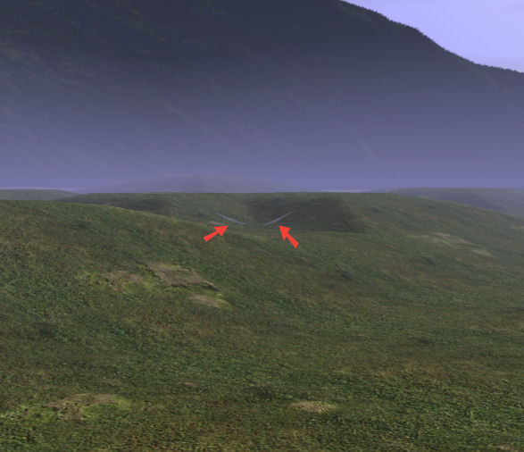
Obrázek 2.29: Díry v terénu zpùsobené aplikací diskrétního LODu.
Prvním øešením se ukázalo renderování terénu ve formì LOD0. Ten toti� díry neobsahoval a v místech, kde by jinak mezi poli terénu prosvítalo pozadí, vystupoval právì LOD0. Jeho textura, která víceménì odpovídala textuøe pou�ité na terén vyšší úrovnì v daném místì, nenarušovala celkové vnímaní a s problémem neobznámenı u�ivatel zpravidla nic nepostøehl. Problém se však vrátil zpìt, kdy� jsme aplikovali na scénu efekt mlhy (zmìna barvy objektu vzrùstající se vzdáleností objektu od pozorovatele). Kvùli mazání z-bufferu po renderování LOD0 se toti� všechna místa, kam se renderuje komplexní terén, pøepíší tímto terénem, tedy èasto i místa dìr v terénu. (Pozor, to se nestane v�dy! Pouze tehdy, nachází-li se za místem, kde je díra, ještì nìjakı další terén vyšší kvality.) Vzhledem k tomu, �e terén, kterı se vyrenderoval do místa díry, nemá stejnou vzdálenost od pozorovatele, jako díra samotná, je daleko více modifikován efektem mlhy, ne� terén v okolí díry. To u� je velmi zøetelné a dìje se to èasto. (Dokonce se mù�e stát, �e se tam zobrazí nìjakı objekt scény - je to situace vıjimeèná, ale nastane-li, pak o to více patrná.)
Nabízela se ihned dvì øešení. Prvním bylo zalepení dìr generováním nové geometrie. Ta by musela bıt buïto generována za bìhu, aby zalepila pøesnì ty díry, které má právì hráè mo�nost vidìt, nebo by jí muselo bıt vygenerováno velké mno�ství, aby zalepila všechny potenciální díry, které mohou na daném terénu vzniknout. Pøi zobrazování by se pak muselo správnì vybírat, co pou�ít a co vynechat. Tento pøístup se zdál bıt velmi pracnım, a proto jsme jej zavrhli. Druhım øešením se nabízelo obohacení ka�dého pole terénu o svislé plošky na inkriminovanıch stranách. Toto øešení jsme také naprogramovali, ale nezdálo se bıt dostateènì pru�nım pro rùzné volby textur. Nedokázali jsme toti� najít takové texturové souøadnice, které bychom pou�ili pro dané plošky tak, aby splnily svùj úèel (také barva okraje díry nepomohla - pro lidské oko to byl pøíliš narušující element). Zkoušeli jsme také mírnì rozšíøit pláty terénu tak, aby se pøekrıvaly a díru zalepily. V takovém pøípadì se však objevil problém známı pod názvem z-fighting (vıpoèetní nepøesnost zpùsobená prací s èísly v plovoucí øádové èárce zapøíèiní špatnı vıpoèet viditelnosti pixelù s velmi blízkımi hodnotami z-ové souøadnice) - dle úhlu pohledu se na místech pøekryvu plátù støídavì zobrazovaly pixely jednoho nebo druhého plátu.
Koneènım úspìšnım øešením se ukázalo opakované zobrazení terénu vyšší úrovnì kvality s mírnım posunem. Terén se nyní tedy zobrazuje tøikrát. V první fázi se zobrazí LOD0 jako pozadí. Po vymazání z-bufferu se vyrenderují blízká pole terénu ve vyšší kvalitì a nakonec se provede zobrazení nìkterıch polí ještì jednou, tentokrát však s terénem posazenım o 30 cm ní�e. Tím se zajistí, �e budou zalepeny všechny díry a zároveò se neprojevuje z-fighting, nebo� 30 cm je ji� dostateènı rozdíl. Zavedli jsme kontrolu polí, která jsou potøeba takto zobrazit (kde by mohla vzniknout díra), tak�e poèet renderovanıch polí nevzrostl nikterak vıraznì (pøibli�nì o ètvrtinu), a díky správnému poøadí renderování (nejdøíve vrchní terén, pak dolní) se naprostá vìtšina pixelù nezpracovává kvùli z-testu. Celkovì jsme tak nezaznamenali ztrátu rychlosti a problém dìr se ji� neobjevuje.
Pøi skládání terénu z jednotlivıch plátù se vyskytl problém s ostrımi pøechody osvìtlení na hranicích polí. Ka�dı plát mìl toti� definovány normály (pou�ívané k vıpoètu intenzity osvìtlení) ve svıch vrcholech pouze na základì své vlastní geometrie, bez ohledu na kontext, v jakém se ve høe nachází (tzn. bez ohledu na okolní pole). To bylo nevyhnutelné, nebo� vedle daného plátu mohlo bıt umístìno v�dy nìkolik jinıch typù a pro ka�dı z nich by musely normály okrajovıch vrcholù vypadat jinak. Na hranicích polí, kde docházelo k zobrazení dvou (èi v rozích ètyø) vrcholù - ka�dı patøil jinému plátu - vznikl ostrı pøechod osvìtlení.
Prvním pokusem o odstranìní byl per-pixel vıpoèet osvìtlení (tj. takovı, kterı neprobíhá ve vertex shaderu pøi transformaci vrcholù, ale v pixel shaderu pro ka�dı renderovanı pixel zvláš�) terénu za pou�ití pøedgenerované normálové mapy. Normálová mapa je textura, která místo barev obsahuje informace o smìru normály. V místì, kam se normálová mapa nanese, se poèítá vıpoèet osvìtlení nikoli s normálou vrcholu èi plochy, ale s normálou získanou bì�nım postupem filtrace textury. Tato technika (èasto té� nazıvaná bump-mapping) umo�òuje opticky napodobit zvrásnìní na zcela rovném povrchu (bez nadbyteèné geometrie). V našem pøípadì nešlo o dosa�ení efektu bump-mappingu, nebo� textura nemìla dostateèné rozlišení, aby se mohla vıraznìji projevit na rovnıch plochách (stejnì jako v pøípadì textury pro LOD0 se jednalo pouze o jednu velkou texturu mapovanou na celı terén). Šlo pouze o pou�ití správnıch normálovıch informací a celkové zpøesnìní vıpoètu osvìtlení na povrchu terénu.
Pøenesení vıpoètu do pixel shaderu nebylo velkım problémem, pouze se renderování terénu zpomalilo, nebo� skuteèná zátì� grafickıch karet v dnešní dobì le�í právì na pixel shaderech, které jsme tak zatí�ili ještì více. Bylo potøeba však vytvoøit normálovou mapu, kterou bychom na terén nanesli. První implementace vyu�ívala prùmìrování normál ulo�enıch ve vrcholech se stejnou souøadnicí. Pustup vıpoètu je následující:
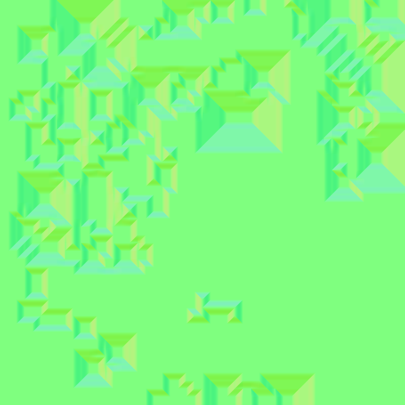
Obrázek 2.30: Normálová mapa pro terén. Pøevládající zelená barva poukazuje na to, �e y-ová slo�ka normály je reprezentována zelenou slo�kou barvy, zatímco x-ová èervenou a z-ová modrou (to je vidìt na svazích kopcù).
Z takto vytvoøené textury (viz obr. 2.30) se v pixel shaderu vyzvedávají hodnoty (filtrování textur provádìné grafickou kartou samo zajistí plynulé pøechody) a pou�ívají pro vıpoèet osvìtlení pro danı pixel. Vıslednım efektem je korektnì osvìtlenı terén bez ostrıch pøechodù a s vyhlazenım stínováním (nepøímo se tak docílilo Phongova stínování namísto klasického Gouraudova) za cenu jednak pomalejšího renderování terénu, a pak pøedevším vırazného prodlou�ením inicializaèní èásti programu (v našem pøípadì zabralo poèítání normálové mapy pro terén velikosti 100*100 polí 15 vteøin).
Pro pøíliš dlouhou inicializaci bylo potøeba pøijít s rychlejším algoritmem vıpoètu normálové mapy. Profiling testovacího programu poukázal na to, �e nejvíce celı algoritmus zdr�uje pøístup k datùm vrcholù, která jsou ulo�ena v pamìti grafické karty (pravdìpodobnì pro nutnou re�ii knihoven DirectX nebo z vlastností AGP sbìrnice). V takovém pøípadì by nám nepomohla �ádná modifikace algoritmu, dokud by data nebyla uchovávána tam, kde se s nimi pracuje, tj. v operaèní pamìti - lehce pøístupná pro CPU. Mo�nosti øešení byly tedy dvì - nakopírovat všechna data do vlastních zdrojù v systémové pamìti, nebo se naopak pokusit pøenést vıpoèet na GPU. Zvolili jsme druhou mo�nost, proto�e GPU je k provádìnım operacím více optimalizována. Byly tedy napsány shadery, které provádìly prùmìrování normál a ukládaly to pøímo do textury. Transformovaná data nikam neputovala a vıslednı postup byl tedy dostateènì rychlı. Pøesto nebyl finální. V prùbìhu implementace jsme toti� zakázali zmìnu denního èasu bìhem hry (do té doby èas plynul pøi høe, tak�e se støídal den s nocí). Per-pixel vıpoèet osvìtlení se najednou stal zbyteènım, vzhledem k tomu, �e osvìtlení je známo ji� na zaèátku hry a je konstantní. Od mapy normál jsme tedy pøešli k mapì osvìtlení (lightmap). Mapování zùstalo stejné, pouze se vıraznì zjednodušily pixel shadery pro terén, ze kterıch se zcela vynechal vıpoèet osvìtlení (toto platí pouze pro denní mód, shadery pro noc jsou naprosto odlišné). Pøíklad takové textury pro terén mù�ete vidìt na obr. 2.31.
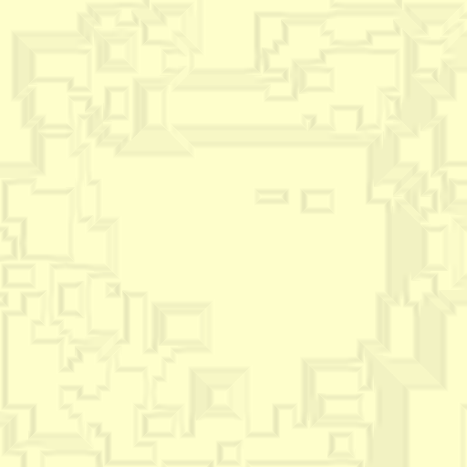
Obrázek 2.31: Lightmap terénu. Pøevládající barva pøímo prozrazuje barvu pou�itého svìtla.
Jednou z nejpodstatnìjších funkcí implementovaného grafického engine je funkce ComputeVisibility(), pomocí ní� tøída CGrObjectTerrain pøiøazuje polím terénu pøíznak viditelnosti v závislosti na pozici pozorovatele a smìru jeho pohledu. I zde nám vıznamnì pomohl políèkovı pøístup k terénu, díky kterému urèujeme také viditelnost všech objektù scény podle viditelnosti pole, na kterém se objekt nachází (pøesnìji - objekt je viditelnı právì tehdy, je-li viditelné alespoò jedno z polí s objektem asociovanıch). Celı postup vıpoètu je zobrazen na následujícím obrázku. Dùle�ité èásti ještì rozebereme.
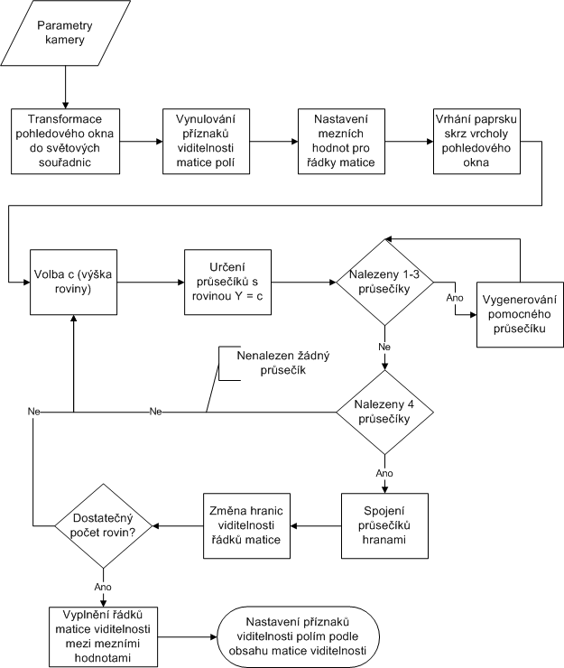
Obrázek 2.32: Prùbìh vıpoètu viditelnosti
Vstupem pro vıpoèet jsou údaje o pozici pozorovatele, smìru pohledu a velikosti zornıch úhlù. Z tìchto údajù se vytvoøí pìt bodù v prostoru - je to pozice pozorovatele (C) a 4 vrcholy zobrazovacího okna (V1 - V4). Ka�dım vrcholem Vi se vyšle paprsek z bodu C a urèí se jeho prùseèík se zvolenou rovinou rovnobì�nou s rovinou XZ (tj. rovina daná rovnicí y = c, kde c je zvolená konstanta). V ideálním pøípadì �ádnı takovı prùseèík neexistuje, co� znamená, �e z pohledu pozorovatele není zvolená rovina vidìt (rozprostírá se v prostoru za kamerou). Druhım triviálním pøípadem je situace, kdy vzniknou 4 takové prùseèíky (pro ka�dı paprsek jeden - I1 - I4), s tìmi mù�eme rovnou pokraèovat ve vıpoètu. Ve vìtšinì pøípadù je však poèet vzniklıch prùseèíkù mezi 0 a 4 a je nutné nalézt jinım zpùsobem další.
Pøidávání prùseèíkù probíhá nahrazováním neúspìšnıch paprskù jinımi, které mají vìtší šanci na prùnik s rovinou. To jsou ty, které svírají s jinım úspìšnım paprskem menší úhel, ne� paprsek neúspìšnı. (Z analytického hlediska je zøejmé, �e kolem nìjakého paprsku, kterı protl zvolenou rovinu, existuje nenulové "úhlové" okolí, ve kterém všechny paprsky danou rovinu protínají.) Vezme se tedy vrchol, jím� byl veden neúspìšnı paprsek (BÚNO nech� je to vrchol V1), a jinı sousední vrchol (pøedpokládejme V2), jím� byl veden paprsek úspìšnı (taková sousedská dvojice zøejmì existuje). Ve støedu spojnice tìchto dvou bodù se vytyèí novı bod V12, kterım se povede náhradní paprsek (ten svírá s úspìšnım paprskem polovièní úhel ne� paprsek neúspìšnı). Pokud ani novì vzniklı paprsek neprotíná zadanou rovinu, opakuje se na dvojici bodù V12 a V2 postup znovu (viz obr. 2.33). Je nutno dodat, �e uvedenı postup nemusí vést k nalezení úspìšného paprsku, resp. prùseèíku, nebo� analytickı pohled nezohledòuje pøesnost zápisu èísel v plovoucí desetinné èárce. V kritickıch situacích se tedy stane, �e metoda zkonverguje (bod, jím� se vede paprsek ji� nemìní pozici), ale stále neexistuje novı prùseèík. Tento problém v algoritmu ošetøuje podmínka, která cyklus ukonèí pøi dosa�ení pøíliš malé vzdálenosti mezi dvìma zkoumanımi body.
Obrázek 2.33: Hledání prùseèíku pùlením úhlu
Je dobré si uvìdomit, jakı vıznam novì vytvoøenı prùseèík má - vzhledem k tomu, �e pùvodní paprsek vùbec neprotínal zvolenou rovinu, byla viditelná oblast roviny v nìkterém smìru neomezená. Naproti tomu mapa omezená je. Nalezení náhradního prùseèíku tedy nahradí neomezenou viditelnost koneènım dohledem. Teoreticky se tedy mù�e pøihodit, �e tento omezenı dohled sní�í dohled v mapì. Prakticky je však ovìøeno, �e díky velikostem mapy, zornım úhlùm a provádìní vıpoètu opakovanì ve více rovinách se to nedìje.
Po získání 4 prùseèíkù se body spojí fiktivními hranami (všechny 4 body le�í v jedné rovinì, vznikne tedy ètyøúhelník) a pro ka�dou z nich se provede obdoba rasterizaèního procesu, tj. urèí se celoèíselné souøadnice bodù (polí terénu v tomto pøípadì), kterımi daná hrana prochází. Tento proces se provádí pøes øádky matice pøíznakù viditelnosti (obdélníková matice o rozmìrech mapy) a pro ka�dı øádek se tak urèí levı a pravı okraj viditelné oblasti (oblast pokrytá vzniklım ètyøúhelníkem). Oblasti ètyøúhelníku vyènívající z mapy nás samozøejmì nezajímají. Viditelná plocha je v�dy souvislá a konvexní, proto si na øádcích vystaèíme v�dy pouze s levım a pravım okrajem.
Proces nalezení prùseèíkù se opakuje pro rùzné roviny, aby se tak zajistila viditelnost v rùznıch vıškách, a tím se pokryly i vyšší èi vıše umístìné pøedmìty. Meze øádkù matice viditelnosti se v dalších prùchodech modifikují pouze tehdy, sahá-li nová mez za pøedchozí. Vısledná viditelná oblast je tedy sjednocením oblastí získanıch v jednotlivıch prùchodech (spoètenıch pøes rùzné roviny). Tento pøístup není pøesnı, nebo� èasto oznaèí za viditelné i pole, jeho� povrch se nachází nízko a ve skuteènosti vidìt není (je vidìt pouze vysokı objekt na poli umístìnı), avšak "chyby" v urèení viditelnosti nedìlá v opaèném smìru - nestane se tedy, �e by viditelné pole bylo opomenuto.
Popsanému algoritmu vıpoètu viditelnosti pøedcházely tøi odlišné, které však vıraznì pøekonal v rychlosti i na vìtších mapách. Jen ve struènosti uveïme, �e se jednalo o tyto metody:
Je dobré ještì uvést zøejmı, ale doposud zamlèenı, fakt, �e náš algoritmus na urèení viditelnosti zohledòuje pouze umístìní a natoèení kamery a zcela ignoruje povrch terénu nebo presenci velkıch objektù v blízkosti kamery, které mohou zcela zakrıt vıhled do scény. Ta, aè témìø celá zakryta, je stále renderována celá (resp. je renderována ta èást, která se nachází v pohledovém jehlanu). Implementovat profesionální pøístupy zohledòující více faktorù nebyly v mezích našich èasovıch mo�ností.
Povrch terénu se nám zdál bıt pøíliš holı a pøi zakázání anisotropního filtrování textur vypadá povrch znaènì rozmazanì. Proto jsme se uchılili k tomu pokrıt jej trávou èi jinım porostem. Navíc jsme chtìli pøidat do scény trochu dynamiky (kdy� pomineme poèítaèem øízená auta oponentù, nejsou v ní �ádné pøedmìty, které by se hıbaly samovolnì). Tím jsme dospìli k návrhu trávy kıvající se ve vìtru.
Tráva je tvoøena malımi "trsy". Ka�dı trs je v základní podobì pouze rovinná ploška sestavená z nìkolika trojúhelníkù (2-20 podle úrovnì komplexnosti, viz obr. 2.34). Dynamika je vytváøena pro trs, tak�e ka�dı trs se mù�e hıbat nezávisle na ostatních. Pro pohyb jsme zvolili kıvání provádìné prostou rotací plošky kolem osy x. Abychom docílili vìtší realistiènosti, aplikovali jsme rotaci na rùzné vrcholy s rùznou intenzitou (v závislosti na vıšce daného vrcholu), tak�e vıše polo�ené vrcholy se odchylují více a trs trávy se jakoby sklání k zemi (zcela se mìní geometrie, trs ztrácí rovinnost). To je patrno na obrázku 2.35.
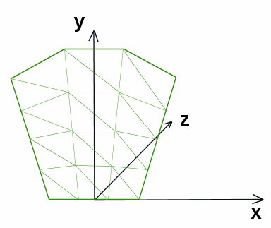
Obrázek 2.34: Geometrická reprezentace jednoho "trsu" trávy.
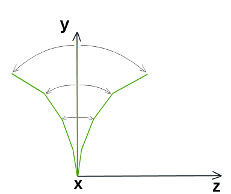
Obrázek 2.35: Rotace trsu je provádìna pro ka�dı vrchol s jinou intenzitou v závislosti na jeho y-ové souøadnici. Tráva se "ohıbá" k zemi.
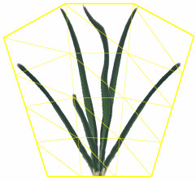
Obrázek 2.36: Pøibli�né mapování textury trávy na geometrii.
Rotaèní úhel se samozøejmì mìní s èasem, tak�e tráva se naklání ze strany na stranu. Pro bli�ší podobu s realitou se navíc urèí smìr vìtru a tráva se pak naklání více v tomto smìru ne� v opaèném. Navíc rotaci kolem osy x pøedchází rotace kolem osy y, aby bylo mo�no trávu smìrovat a ohıbat do všech stran.
Kıvání trávy v jednom smìru v náhodnıch èasovıch intervalech vytvoøilo alespoò náznak dynamiky, ale k realitì to mìlo velmi daleko. Zavedli jsme proto pohyb závislı nejen na èase, ale také na pozici trsu trávy v mapì. Obì velièiny se tedy nyní pou�ívají jako parametry pro sinovou funkci, která urèí vıslednı úhel otoèení konkrétního trsu trávy. Vısledkem jsou viditelné "vlny" v hustší trávì podobné tìm, které mù�eme vidìt na obilném poli (podélné vlnìní).
Z dùvodu vysoké vıpoèetní slo�itosti není mo�né trávu zobrazovat na všech polích terénu (navíc je to zbyteèné, proto�e v dálce ji� není témìø vidìt). Nastavením komplexity se tedy omezuje vzdálenost, do které se ještì tráva renderuje. Aby pøechod mezi polem, kde tráva ještì je zobrazena, a polem, kde u� není, nebyl tolik patrnı, zvyšuje se prùhlednost trávy se vzdáleností od pozorovatele tak, aby na pøelomu, kde se pøestává renderovat, ji� byla zcela prùhledná. Postup zprácování jednoho vrcholu renderovené trávy provádìnı uvnitø vertex shaderu ukazuje následující diagram:
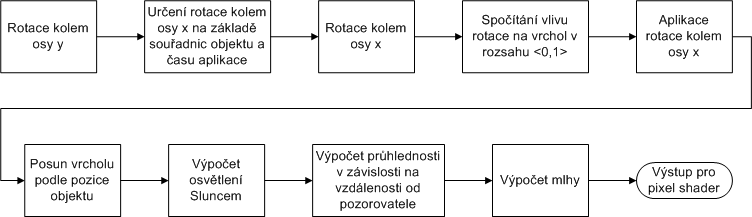
Obrázek 2.37: Zpracování jednoho vrcholu geometrie trávy ve vertex shaderu.
Renderování trávy probíhá po jednotlivıch polích terénu tak, �e se renderuje nejdøíve tráva na vzdálenìjších polích a pak teprve na bli�ších. Je to sice znaènì pomalejší postup, nebo� ka�dı pixel vısledného obrazu tak mù�e bıt pøepsán v krajních pøípadech (kamera umístìná tìsnì nad zemí) i stonásobnì, ale jediná mo�nost jak renderovat transparentní objekty (a tím tráva je). Ohromné mno�ství geometrie trávy (pro celou mapu by to byly i desítky milionù trojúhelníkù) je uchováváno podobnì jako terén formou instancovanıch vzorù. Narozdíl od terénu je však vzorù více v závislosti na tom, kolik druhù trávy pou�ije tvùrce v mapì. Navíc všechna tráva je definována tak, �e je posazena do nulové vıšky, musí se tedy v�dy posadit na terén. To se dìlá pøi inicializaci mapy, kdy se vytváøí pro ka�dou uspoøádanou trojici (plát terénu, rotace políèka, druh trávy) samostatnı buffer, kterı se naplní modifikovanımi daty geometrie trávy. Obrázek 2.38 jen velmi špatnì vystihuje celkovı vısledek, nebo� mu chybí dynamika, o kterou jsme se sna�ili.
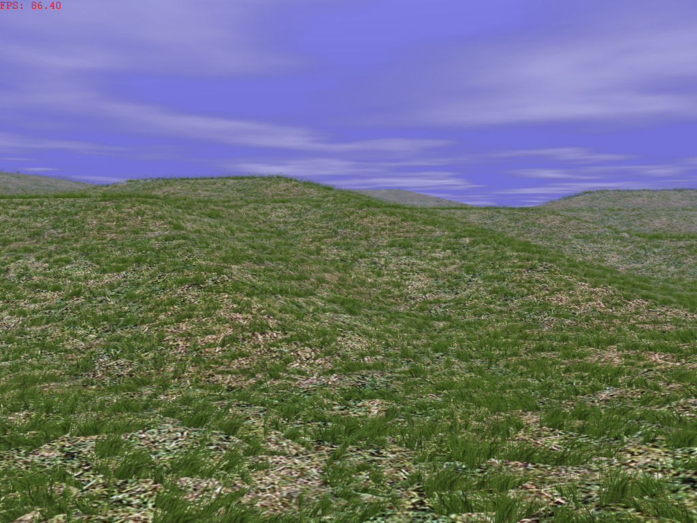
Obrázek 2.38: Snímek ze hry ukazující vıslednou podobu trávy.
Jen pro srovnání uvádíme ještì jeden snímek ze hry poøízenı na stejném místì mapy a stejnım nastavením, pouze zakázanım renderováním trávy. (Pozn.: Ze snímku je díky údaji o snímkovací frekvenci i patrno, jak velkou zátì� na grafickou kartu renderování trávy pøedstavuje.)
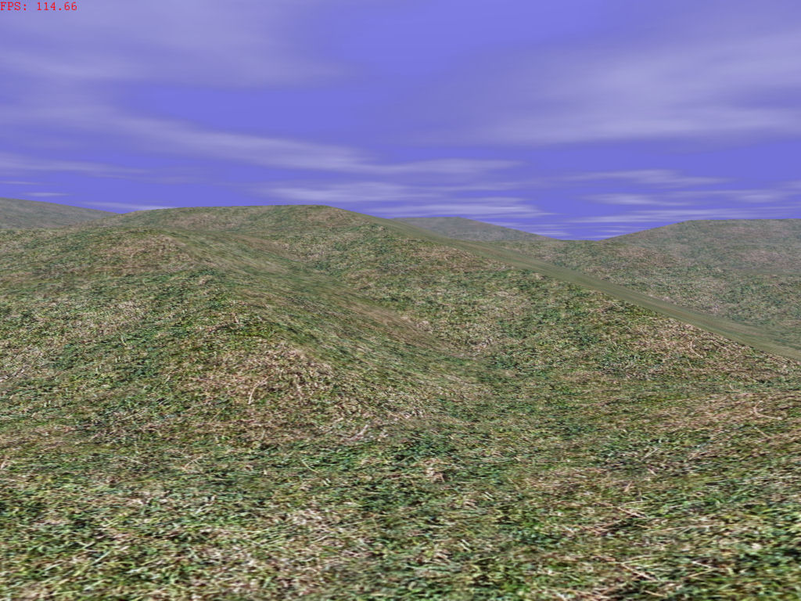
Obrázek 2.39: Snímek ze hry ukazující terén bez trávy.
Realistické zobrazení oblohy pøispívá k celkovému pocitu realistiènosti renderované scény. Existuje nìkolik metod pro zobrazení oblohy. Jedná se o tzv. sky box (krychle, jen� má na ka�dé stìnì texturu s pozadím èi oblohou), dále o tzv. sky dome (koule takté� povìtšinou s namapovanou texturou oblohy a pozadí). Další pøístupy se zabıvají vıpoètem barvy oblohy podle rùznıch analytickıch modelù. Vyjímkou není ani generování mrakù pomocí perlinova šumu a jejich následné stínování v závislosti na pozici slunce na obloze. Náš pøístup ale do takovıch propracovanıch modelù nezachází. Pøesto si myslíme, �e náš pøístup je tou správnou volbou mezi slo�itostou a realistickou oblohou a jednoduchou implementací oblohy jakou je metoda sky boxu nebo sky domu.
Náš pøístup k zobrazování oblohy se skládá z následujících èástí:
Jeho implementací je tøída CGrObjectSkySystem.
Renderování barvy se sluncem se zakládá na kapitole z knihy ShaderX2. Jedná se o kapitolu Advanced sky dome rendering od Marca Spoerla a Kurta Pelzera. Model popisovanı v této kapitole jsme ještì malinko zjednodušili a upravili. V tomto modelu se jedná o to, �e ovzduší je tvoøeno molekulamy a aerosolem. Tyto molekuly a aerosol mají urèitou barvu a v závislosti na úhlu a barvì paprskù dopadajícího svìtla se jejich barva mìní. Tento efekt vytváøí barvu oblohy. Náš systém poèítání barvy oblohy se po urèitém èase experimentování ustálil na tom, �e barva aerosolu je konstantní nezávislá na smìru svìtla od slunce a barva molekul je závislá na smìru svìtla od slunce. Nejvıraznìji se zapoèítává barva molekul pro oblast oblohy, blízko kolem slunce. Aby bylo mo�né docílit rùznıch efektù na obloze jako jsou èervánky, mìní se barva svìtla slunce v èase. Barva svìtla slunce se dá nastavit v jednotlivıch hodinách, mezi jednotlivımi hodinami se barva svìtla slunce dopoèítává pomocí interpolace. Slunce samotné je zobrazeno na obloze pomocí texturové projekce, která se blenduje speciálním zpùsobem s pozadím oblohy. Systém dne je nastaven tak, �e slunce vychází v 6 hodin ráno a zapadá v 18 hodin veèer. Celá obloha tvaru sky domu je posunuta jakoby do nekoneèna trikem v shaderovém programu. Tato celá obloha putuje v závislosti na pozici hráèe, proto se k ní není nikdy mo�nì pøiblí�it.
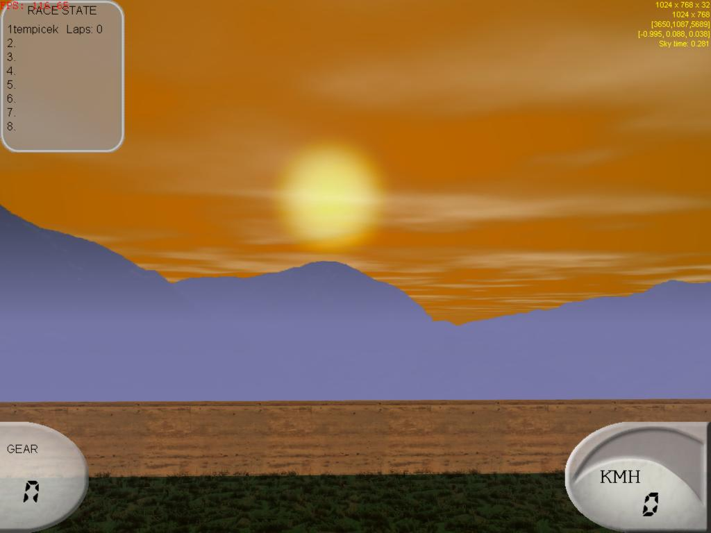
Obrázek 2.40: Ukázka mo�ností nastavení barvy oblohy - oran�ové svítání. Èas 6:50. Kdy� slunce vyjde vıš, obloha bude zelená.
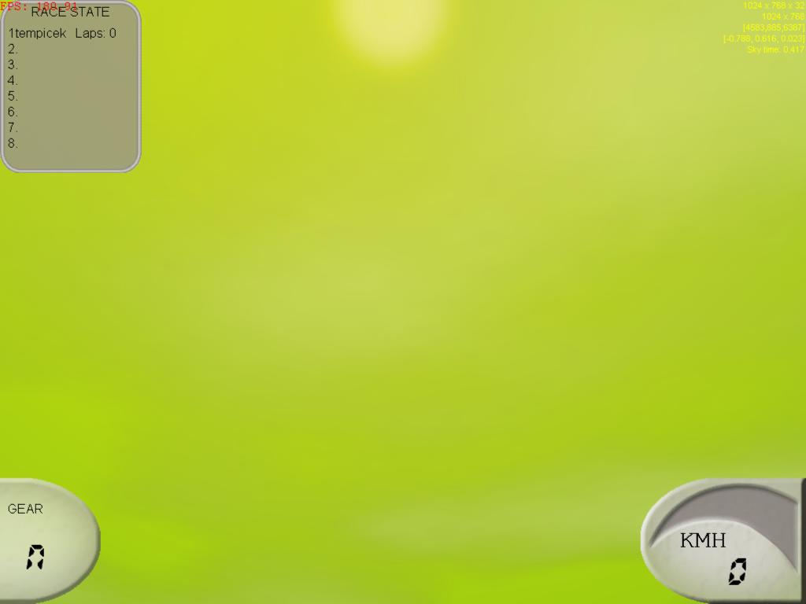
Obrázek 2.41: Slunce vyšlo vıš a obloha se stala zelenou. Èas 10:00.
Mraky jsou vrhány na oblohu pomocí texturové projekce o velkém projekèním úhlu asi 163 stupòù. S barvou oblohy se blendují pomocí alpha-blendingu v závisloti na prùhlednoti daného pixelu mraku. Mraky jsou takté� trikem v shaderovém programu posunuty jakoby do nekoneèna. Texturová projekce a trik posunutí do nekoneèna zpùsobují, �e se pattern mraku opakuje v dálce nad obzorem a to zpùsobem, kterı vypadá natolik pøirozenì, �e se stì�í dá uvìøit tomu, �e se opakuje pouze jedna a tatá� textura mraku.
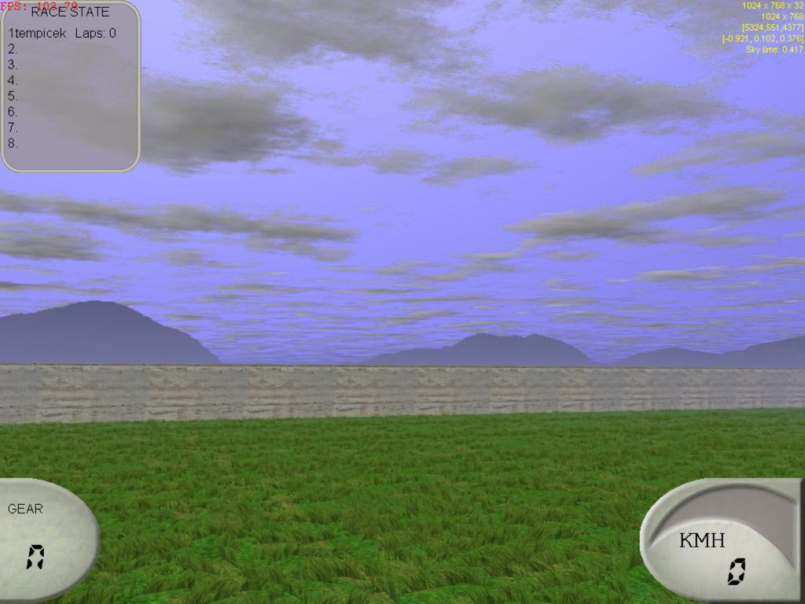
Obrázek 2.42: Ukázka alternativních mrakù a efektu opakování do nekoneèna.
Pozadí je namapováno na ètyøi stìny (krabice bez víka a dna), které jsou umístìny v dostateèné vzdálenosti od pozorovatele. Ve dne je na nìj aplikována mlha. V noci je ponecháno bez mlhy. Ka�dá stìna má pøiøazenou svoji vlastní texturu, která je nastavitelná.
Hvìzdy na noèní obloze jsou náhodnì vygenerované a to v poètu 1000 hvìzd. Hvìzdy jsou generované, jak rùzné barvy šedi, tak rùzné velikosti. Blendují se na oblohu v pøípadì, �e je barva svìtla slunce u� nedostateèná, aby vıraznì osvìtlila oblohu. To vytváøí efekt postupného objevování se hvìzd v pøechodovém èase mezi dnem a nocí.
V døívìjších grafickıch enginech bylo zvykem implementovat mlhu jako nástroj pro sní�ení maximálního dohledu ve scénì (tím bylo mo�né oøezávat pøíliš vzdálené èásti scény, které by byly celé v mlze, a dosáhnout tak vyšší snímkovací frekvence). Dnes se ji� hledí více na vzhled a mlha je tedy nástrojem na další zvıšení realistiènosti scén. My jsme implementovali mlhu dvìma rùznımi zpùsoby, obì metody se však øadí k tìm nejsnazším technikám. Pøesto nabízí jistı pocit hloubky scény.
Pro všechny objekty, blízkı terén a trávu jsme pou�ili pøímı pøepoèet vzdálenosti renderovaného vrcholu od pozorovatele na intenzitu mlhy. Tato intenzita se spoèítá ve vertex shaderu, interpoluje se pøes plochu trojúhelníka stejnì jako barva nebo souøadnice textury a v pixel shaderu se aplikuje stejnım zpùsobem, jako se aplikuje napøíklad prùhlednost. Tzn., �e vısledná barva pixelu C bude dána vztahem C = P*(1 - I) + F*I, kde P je pùvodní barva pixelu, F je barva mlhy a I je intenzita mlhy v intervalu <0,M> (M je maximální intenzita mlhy menší ne� 1 - to proto, aby nebyly vzdálené objekty zcela jednobarevné jako je tomu v mnoha hrách).
Jedinım problémem s implementací mlhy se ukázaly bıt velké nedìlené plochy jako napøíklad LOD0 nebo pozadí systému oblohy. Na takto velkıch plochách je lineární interpolace provádìná mezi vrcholy nedostateèná a je potøeba poèítat skuteènou vzdálenost pixelu. Ta se interpoluje namísto intenzity mlhy a vısledná intenzita se poèítá a� v pixel shaderu pro ka�dı zobrazovanı pixel. Tento postup je samozøejmì pomalejší, ale jedinı mo�nı pro zobrazení vìtších ploch, pokud nechceme, aby byl znatelnı pøechod k zadním ménì komplexním èástem scény. Zvláštní pøístup si pak vynutil systém oblohy, resp. pozadí (na oblohu se mlha neaplikuje). Na pozadí scény (kopce v dálce) bylo tøeba experimentálnì najít pøijatelné parametry pro intenzitu, barvu a vıškovı dosah mlhy, aby celé pozadí nesplynulo v jednobarevnou plochu a neztratilo tak svùj vıznam. Dovolíme si opìt doplnit popis obrázkem ze hry:

Obrázek 2.43: Scéna zanoøená do mlhy. Barva mlhy lze snadno zmìnit. Na obrázku je také patrné, �e se mlha dr�í více u zemì.
Grafickı 3D engine je slo�en ze dvou hlavních èástí - z jádra, které obstarává veškerou logiku toho, co se má za jakıch okolností zobrazovat, a ze zobrazované scény. Ta je slo�ena z velkého mno�ství samostatnıch navzájem se neovlivòujících objektù s nízkou úrovní autonymie - tyto objekty doká�í samy sebe zobrazit nebo transformovat, ale neznají kontext, v jakém se nachází (svìtelné podmínky, vzdálenost od pozorovatele atp.). Grafické jádro tedy volí, které objekty budou zobrazeny, urèuje, jakım zpùsobem tak bude provedeno, a zobrazení samotné pak nále�í ka�dému vybranému objektu.
V této èásti popíšeme rozlo�ení zobrazované scény, typy pou�itıch grafickıch objektù, jejich závislosti a schopnosti. V prùbìhu vıvoje se ukázala úroveò autonymity objektù jedním z klíèovıch prvkù celého grafického engine, a proto se v závìru této kapitoly budeme vìnovat vlastnostem zvoleného návrhu a jeho implementace.
Všechno co se dá a má renderovat je za bìhu programu ulo�eno v objektu tøídy CScene, ta tedy reprezentuje celou zobrazovanou scénu. Objekt scény je jedinı pro celou aplikaci a o jeho inicializaci a udr�ování se stará modul Client. Ten naète všechny potøebné objekty, inicializuje je, nastaví jejich pozice uvnitø scény a pøedá scénu objektu tøídy CGraphic, která je jádrem grafického engine a stará se o správné zobrazování scény, resp. jejích objektù. Scéna je trojrozmìrnı prostor, v nìm� má ka�dı objekt své pevné umístìní (to se mù�e s èasem mìnit, ale je statické po dobu kreslení jednoho snímku) definované trojicí vektorù èi transformaèní maticí. Scéna je však také chápána jako dvourozmìrné pole - mapa, v ní� ka�dı objekt zaujímá urèité pole (nebo oblast sousedících polí). Toto rozøazení objektù do polí (se zanedbáním jejich vıšky, tj. Y-ové souøadnice) má zásadní vıznam pøi urèování vzájemnıch vzdáleností objektù, jejich vzdálenosti od kamery nebo jejich viditelnosti v závislosti na smìru pohledu. Všechny tyto informace se dají poèítat v celoèíselné aritmetice nebo tabelovat. Pouze ve vıjimeènıch pøípadech jsou potøeba pøesné hodnoty, které se ale poèítají a� na základì neúspìšného testu celoèístelné aritmetiky.
Základem scény je terén sestavenı z omezeného poètu typù na sebe navazujících dílù ètvercového pùdorysu (nazıvejme typ takového dílu terénu plátem). Toto dìlení koresponduje s chápáním scény jako dvourozmìrné mapy, proto mù�eme srovnávat souøadnice objektù a polí terénu. To má opìt velmi ulehèující dopad napøíklad na zjiš�ování geometrie povrchu terénu pod nìjakım objektem - pou�ijeme dvourozmìrné souøadnice objektu k nalezení pou�itého plátu. Vzhledem k tomu, �e obdélníkovou mapu tvoøí zpravidla nìkolik tisíc polí, kde ka�dé má svou geometrii tvoøenou desítkami a� stovkami trojúhelníkù, celı terén mù�e obsahovat i nìkolik milionù trojúhelníkù. Jeho zpracování a zobrazení tedy tvoøí vıznamnou èást celého renderovacího procesu, a proto je mu také vìnována celá kapitola v sekci pojednávající o pou�itıch algoritmech. Zde pouze zmíníme, �e terén, jako instance tøídy CGrObjectTerrain, je samostatnou polo�kou v objektu scény.
Další objekty scény, které mají nìjakou svou fyzikální reprezentaci, jsou rozdìleny do dvou základních skupin - statické a dynamické. Toto rozdìlení je zcela zásadního charakteru, nebo� statické objekty jsou do scény umístìny pouze jednou, a poté ji� není mo�né zmìnit jejich pozici. Díky tomu je mo�né pøi jejich inicializaci pøipravit dopøedu øadu struktur, které se takté� bìhem èasu nemìní. Z dynamickıch objektù je dále vyèlenìn seznam aut a objektù s auty spojenıch (zatím pouze kola). Tyto jsou toti� pova�ovány za více dùle�ité a k jejich zobrazení je pou�ita jiná technika ne� je pou�ita u ostatních dynamickıch objektù.
Oddìlenì od ostatních objektù jsou ulo�eny transparentní objekty, bez ohledu na to, zda jsou statické èi dynamické. Jejich vıznam je zpravidla na dotváøení grafickıch efektù, kupøíkladu k dynamicky poèítanım svìtlùm se pøikládá objekt, kterı má budit dojem záøe svìtla (více v odstavci CGrObjectBillboard). Tyto objekty není mo�né míchat s ostatními, nebo� pro jejich správné zobrazení je nutno je v ka�dém snímku setøídit sestupnì podle jejich vzdálenosti od kamery a v tomto poøadí je renderovat. Toto je ovšem èasovì nároènı pøístup, a proto se provádí pouze na objekty podezøelé z prùhlednosti.
Zvláštní pozici a samostatnou reprezentaci ve scénì má objekt reprezentující trávu pokrıvající èásti terénu. Tento objekt je sice reprezentován pouze malımi trojúhelníky pokrytımi poloprùhlednou texturou, tak�e by svım zaøazením patøil mezi transparentní objekty, ale pro kvantitu v jaké se ve scénì zpravidla vyskytuje, není mo�né na nìj aplikovat stejnı postup (poèet jednotlivıch "trsù" na celé mapì se pohybuje v øádu statisícù a� milionù).
Zobrazovaná scéna je uzavøenı celek s koneènou velikostí. Pøi pohledu do dálky (èi vzhùru) je však tøeba také budit iluzi nìjakého prostoru (ne prázdnoty). Tento vzdálenı prostor definuje objekt SkySystem, kterı je tvoøen kompozicí oblohy a jednoduchého pozadí.
Zbytek objektù ve scénì reprezentuje svìtelné zdroje. Jednak je to seznam blí�e nespecifikovanıch svìtel (ka�dé z nich mù�e bıt jiného typu a tedy renderováno jinou technikou), jednak objekt SunLight reprezentující Slunce jako hlavní svìtelnı zdroj ve scénì renderované bìhem dne (v noci není svìtlo od Slunce poèítáno vùbec). Poslední polo�kou je barva tzv. ambientního svìtla. Také o svìtlech je samostatná kapitola v èásti pojednávající o jádru grafického engine, a proto se jimi zde více zabıvat nebudeme.
Model tøíd grafickıch objektù byl navr�en tak, aby se s nimi dalo pracovat co nejabstraktnìji. Proto bez ohledu na povahu grafického objektu témìø všechny dìdí své vlastnosti od základní tøídy CGrObjectBase. Nejpodstatnìjšími polo�kami této tøídy jsou ty, které definují její umístìní v prostoru nebo v mapì. Pro pøevedení objektu do souøadného systému scény má má ka�dı objekt dvì transformaèní matice a 3 vektory. Jedna transformaèní matice má vıznam posunu objektu a rotace, druhá pak jeho zvìtšení, resp. zmenšení. Toto rozdìlení na dvì separátní matice, které vy�aduje jejich vzájemné pronásobení po ka�dé zmìnì libovolné z nich, si vynutil modul fyziky, kterı nepracuje s velikostí objektù, ale kterı je zdrojem informací o jejich umístìní. Matice pro zmìnu mìøítka objektu se tedy vytvoøí pøi inicializaci objektu a v prùbìhu hry se ji� zpravidla nemìní. Tøi transformaèní vektory mající stejnı vıznam jako transformaèní matice jsou zde z dùvodu mo�nosti rùzného zadání transformací. Ve høe toho není vyu�ito, ale v pøidru�emıch utilitách je snazší zadávat rotaci jako vektor tøí úhlù.
Jak ji� bylo zmínìno, vedle svìtovıch souøadnic má ka�dı objekt také celoèíselné souøadnice v mapì, pøípadnì má seznam polí, na kterıch se vyskytuje (pøi rovnobì�né projekci do roviny XZ, tj. horizontální roviny). Tyto je tøeba pro udr�ení aktuálnosti nastavovat v�dy pøi zmìnì svìtovıch souøadnic. Není nutné, aby byla tato informace naprosto pøesná, a proto se za úèelem vyšší rychlosti objekt usazuje na všechna pole, do kterıch zasahuje jeho obálka tvaru kvádru.
Mezi nejpodstatnìjší schopnosti objektu tøídy CGrObjectBase patøí schopnost vyrenderovat sám sebe. Vìtšinou k tomu však potøebuje další nastavení zvenèí (napøíklad volbu správného shaderu, LODu, ...). �ivotnost všech objektù je v souèasnosti stejná jako �ivotnost scény, ale poèítá se s tím, �e toto chování bude zmìnìno.
Následující class diagram zobrazuje všechny grafické objekty a jejich vztah k tøídì CGrObjectBase.
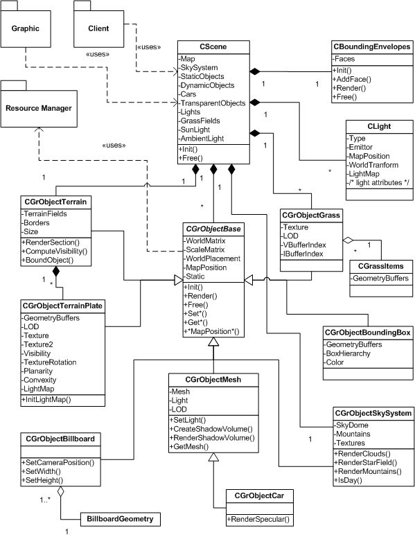
Obrázek 2.44: Model tøíd grafickıch objektù
Z uvedeného diagramu je patrné, �e tu není úplná korespondence mezi grafickımi objekty scény a tøídami grafickıch objektù. Proto v následujících odstavcích popíšeme ka�dou tøídu zvláš� vèetnì rozebrání jejího vıznamu a pou�ití.
Vıznam terénu v zobrazovacím procesu ji� byl zmínìn. Jeho implementací je tøída CGrObjectTerrain. Jako potomek tøídy CGrObjectBase sice dìdí všechny její polo�ky vèetnì transofrmaèních matic, ale mnohé se pro tento objekt stávají irelevantními. Napøíklad pro umístìní terénu do scény je v�dy pou�ita jednotková matice, objekt je v�dy statickı atd. Ve scénì existuje v�dy právì jeden objekt této tøídy, jak je vidìt na vıše uvedeném diagramu.
Terén je reprezentován obdélníkovou maticí její� prvky reprezentují jednotlivá pole terénu, resp. mapy scény. Ka�dé pole je pak instancí tøídy CGrObjectTerrainPlate. Tøída pro terén sama o sobì nenabízí velké mno�ství vlastních metod, spíše slou�í pro zabalení všech polí a poskytuje pøístup k jejich polo�kám. Pøesto zde nalezneme dvì vıznamné metody. První z nich je RenderSection(), druhou ComputeVisibility(). RenderSection() narozdíl od metody Render() vyrenderuje pouze zvolenou obdélníkovou èást terénu. Málokdy toti� potøebujeme nutnì zobrazit celı terén najednou, zpravidla nám staèí jen malá èást, a proto z dùvodu zvıšení rychlosti urèíme co nejmenší nutnou oblast, kterou zobrazíme pole po poli, a okolí necháváme bez povšimnutí. Vıpoèet viditelnosti provádìnı metodou ComputeVisibility() tøídy CGrObjectTerrain je jednou z nejpodstatnìjších funkcí implementovaného grafického engine. Proto je mu vìnováno více prostoru v èásti popisující pou�ité techniky a algoritmy.
Ka�dé pole terénu je reprezentováno jedním objektem tøídy CGrObjectTerrainPlate. Je to statickı objekt, kterı existuje pouze jako souèást terénu, tj. jako polo�ka tøídy CGrObjectTerrain. Objekt obsahuje odkaz na nìjakı plát terénu ulo�enı v resource manageru vèetnì všech jeho úrovní kvality (viz LOD). Nejdùle�itìjšími polo�kami jsou odkazy na dvì textury a celoèíselnì vyjádøené rotace tìchto textur kolem osy y. Jedna z textur je pova�ována za základní a ta je nanesena na povrch daného pole v�dy. Tato textura má vıznam pùdy v daném místì (tráva, bahno, písek,...) a nemù�e bıt prùhledná. Druhá textura naproti tomu vìtšinou není pøítomna. Je-li, pøekrıvá plnì první texturu v místech, kde není prùhledná. Její hlavní vıznam je pro zobrazení silnic, nebo� silnice není fyzickım objektem (to by zbyteènì zeslo�i�ovalo její mapování na terén a zpomalovalo rendering), ale dá se pou�ít i jinak, to zále�í èistì na popisu jednotlivıch polí terénu, a tedy na u�ivateli/autoru herní mapy. Rotace obou textur jsou mo�né pouze po násobcích 90 stupòù (stejnì jako rotace polí samotnıch, která navíc nelze ze zøejmıch dùvodù vùbec rotovat kolem os X a Z).
Další dùle�itou informací, kterou si nese ka�dı objekt této tøídy, jsou pøíznaky rovinnosti, "pseudo konkávnosti" a viditelnosti (o té jsme mluvili ji� v pøedchozích odstavcích). Ka�dé pole, které je rovinné, je toti� mo�né za jistıch okolností renderovat ve velmi nízké kvalitì, a tím ušetøit èas GPU. Informace o konkávnosti je pak potøebná pouze pøi generování tzv. LOD0, tj. pøi inicializaci scény. (Více o zmínìnıch polo�kách v kapitole o renderování terénu.)
Nìkterá pole mohou bıt osvìtlena statickım (nepohyblivım) svìtlem (napøíklad poulièní lampou), jeho� vıpoèet by zabíral zbyteènì mnoho èasu. Pro tyto pøípady má ka�dé takové pole terénu asociovánu osvìtlovací texturu (u�ívá se termín lightmap), v ní� je dopadající svìtlo ji� pøedpoèítáno (viz kapitola Svìtla).
Tøída CGrObjectMesh reprezentuje vìtšinu statickıch i dynamickıch objektù ve scénì. Dalo by se øíct, �e ka�dı objekt, kterı má objem a nìjakou fyzikální reprezentaci, je ve scénì zastoupen instancí této tøídy. Tøída je polo�ena na základì práce s objektem typu ID3DXMesh, jeho� popis mù�ete nalézt v dokumentaci DirectX SDK. Tento typ objektu mìl pro náz vıznamnou vıhodu, a to, �e jej lze vhodnou funkcí DirectX naèíst ze souboru formátu .x. Reprezentuje libovolnı model s neomezenım poètem textur a materiálù. V objektu tøídy CGrObjectMesh se uchovávají odkazy na instance objektu ID3DXMesh ulo�ené v resource manageru. Ka�dı z nich pøedstavuje jednu úroveò detailu daného objektu scény.
Ve scénì se zpravidla vyskytují stovky (ale nìkdy i tisíce) objektù tøídy CGrObjectMesh. Mnohé z nich pou�ívají stejnı model, tj. stejnou instanci objektu ID3DXMesh, ale pøesto mù�e bıt poèet rùznıch modelù vysokı. Mnohé z tìchto modelù jsou tvoøeny stejnou geometrií a odlišuje je pouze jiná textura. Dobrım pøíkladem jsou ve høe pou�ité modely billboardu, na kterıch mù�e bıt v�dy jinı nápis (viz obrázek 2.45). Bylo by ne�ádoucí uchovávat v pamìti násobnì stejná data (zvláštì, jde-li o pamì� na grafické kartì), a proto se zavedl systém substitucí. Ve speciálním souboru popisujícím konkrétní objekt scény (.modelDef) jsou uvedeny pou�ité modely pro jednotlivé úrovnì detailu a ka�dá úroveò má definován seznam substitucí textur. Ten pøesnì øíká, které textury se mají v daném modelu nahradit jinımi (a jakımi). Za bìhu programu se pak namísto textury pou�ité v modelu nastaví textura urèená substitucí a model se nechá zrenderovat pøíslušnou funkcí DirectX. Obdobnım zpùsobem se dá pracovat i s materiály, ale toho ve høe nevyu�íváme.
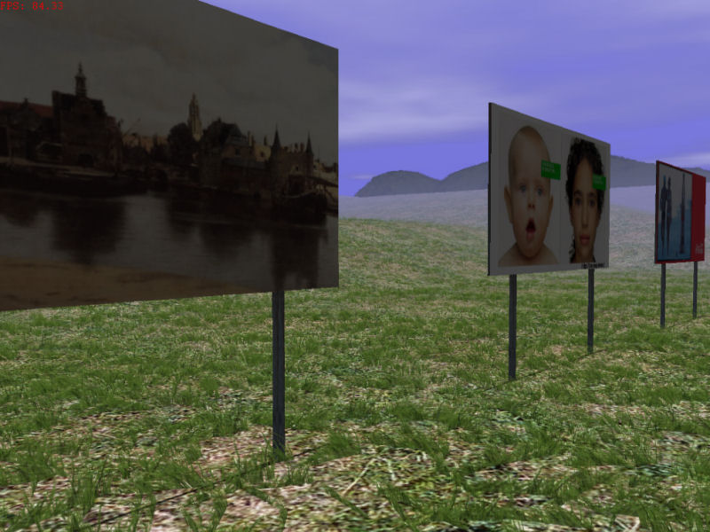
Obrázek 2.45: Mapování rùznıch textur na stejnı model
Ke ka�dému objektu je mo�nost pøiøadit jedno svìtlo. Objekt se tak stává emitorem, pøíkladem ve høe je lampa nebo auto. Pro statické objekty není tato polo�ka tak zásadní jako pro dynamické, které se pohybují, èím� se i svìtelnı zdroj stává dynamickım, ale stále závislım na pozici objektu (emitoru). Pøi zobrazování scény je èasto potøeba dohledávat která svìtla jsou v urèité èásti mapy, co� je zjednodušeno asociováním objektù k polím mapy a pøiøazením svìtel k objektùm.
V pøípadì pou�ití techniky stínovıch tìles pro tvorbu dynamickıch stínù je ka�dému statickému objektu tøídy CGrObjectMesh také vygenerováno stínové tìleso. V dùsledku nedokonèení této metody do finální podoby se však nepou�ívá a stínová tìlesa se negenerují.
Pøímım potomkem tøídy CGrObjectMesh je tøída CGrObjectCar. Jediné rozšíøení, které pøináší oproti rodièovskému objektu, je nepovinnı seznam kol (kola jsou opìt objekty tøídy CGrObjectCar). Tato modifikace zjednodušuje umis�ování kol do scény, jejich dohledávání ve chvíli, kdy chceme pracovat s celım autem, ale pøedevším koresponduje s pøedstavou auta jako objektu slo�eného z karoserie a kol (více auto v grafickém engine neèleníme). Dùvodem, proè i kolo je reprezentováno objektem tøídy CGrObjectCar je fakt, �e tato tøída má navíc metodu RenderSpecular(), která pou�ívá na zobrazení auta (tedy i jeho kol) pokroèilejší (a èasovì nároènìjší) osvìtlovací model.
Ve scénì je také mnoho objektù, které nemají fyzikální reprezentaci, jsou tvoøeny pouze rovinnım útvarem a jejich úlohou je vytvoøit iluzi nìjakého objektu èi efektu. Pøíkladem jsou tzv. light glows, tj. správnì umístìné poloprùhledné obrázky budící dojem záøe od svìtelného zdroje, jak ukazuje obrázek 2.46.
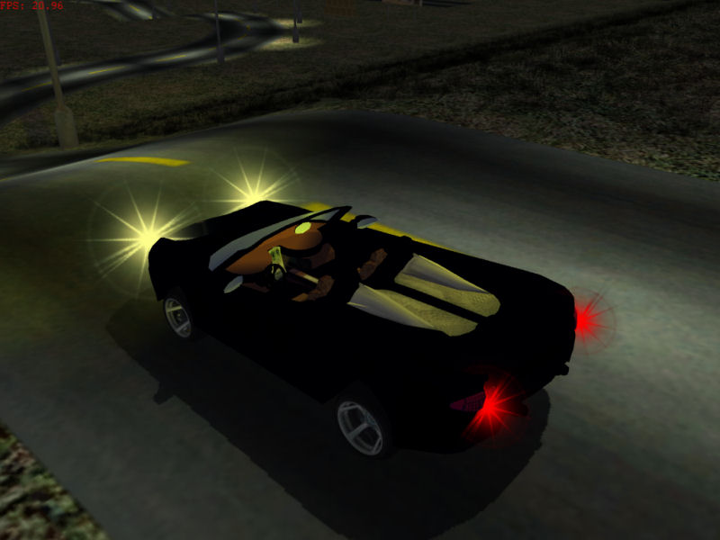
Obrázek 2.46: Pou�ití billboardu pro light glow efekt
Takovı objekt scény reprezentovanı objektem tøídy CGrObjectBillboard je tvoøen pouze jedním obdélníkem (2 trojúhelníky), jeho� rotace se nastaví v�dy taková, aby normála plochy smìøovala k pozorovateli. Tato metoda nazıvaná billboarding se èasto pou�ívá k nahrazení slo�itìjších objektù, které však vypadají ze všech stran pøibli�nì stejnì, primitivní geometrií. (Pozn.: Døíve se pou�ívala pøedevším na zobrazování postav nebo stromù pøitoèenıch k pozorovateli v�dy stejnou stranou. Souèasné grafické enginy si ji� zakládají na tom, �e mají detailnì prokreslené právì postavy èi vegetaci, ale na vzdálené objekty je tato metoda stále u�iteèná.) Proto�e všechny objekty tohoto typu pou�ívají stejnou geometrii, pouze v jinıch proporcích, jsou data geometrie všemi instancemi sdílena. První vytvoøená instance vytvoøí a inicializuje patøièné buffery a ka�dı další novì vzniklı objekt pouze zvyšuje èítaè referencí. Poslední uvolòovanı objekt pak zruší i naalokovaná data.
Vzhledem k dvourozmìrné povaze objektu jsou všechny transformaèní metody dìdìné od tøídy CGrObjectBase pøedefinované a jsou definovány dvì nové - SetWidth() a SetHeight(), které nastavují pouze x-ovou a y-ovou slo�ku vektoru pru zmìnu mìøítka.
Tøída CGrObjectSkySystem implementuje systém oblohy a pozadí scény jak je popsán v pøíslušné kapitole. Objekt této tøídy se ve scénì nachází v�dy právì jeden a všechny jeho polo�ky se naèítají ze souboru *.sk pøi nahrávání konkrétní mapy. Tak je zajištìno, �e obloha u ka�dé mapy mù�e vypadat jinak. Struktura a formát souboru s pøíponou *.sk je popsána v dokumentaci systému souborù. Dobu hry si volí hráè sám v menu single nebo multiplayeru. Samotné renderování systému oblohy je implementováno ve funkci RenderSkySystem() tøídy CGraphic, která volá jednotlivé renderovací funkce tøídy CGrObjectSkySystem. Jedná se o následující funkce:
Navíc poskytuje tøída CGrObjectSkySystem následující dùle�ité informace:
Tato tøída reprezentuje trávu rostoucí na nìjakém poli terénu konkrétního typu a konkrétní rotace. Objekt tedy slou�í jako šablona pou�itá na více polích mapy (bez ohledu na vıškové umístìní pole). Pøesto�e jde o potomka tøídy CGrObjectBase, vìtšina zdìdìnıch polo�ek a metod je irelevantních, nebo� vektor rozta�ení je ignorován, posun je dán souøadnicemi pole mapy, na kterém je tráva umístìna a rotace je uplatnìna pouze kolem osy Y a pouze v násobcích 90 stupòù. Tato tøída zahrnuje i všechny naètené úrovnì detailu pro danı blok trávy. Geometrie je ulo�ena v jednom vìtším bufferu a pøi vıbìru úrovnì detailu pro zobrazení se pouze mìní index prvního vrcholu, od kterého je daná úroveò detailu ulo�ena. Souèástí ka�dého objektu CGrObjectGrass je také objekt tøídy CGrassItems, kterı v sobì uchovává seznam "trsù trávy" (jedna malá polo�ka èítající jen nìkolik trojúhelníkù) pou�itıch v daném objektu. Je nutné, aby všechny trsy na jednom poli pou�ívaly stejnou texturu; bez tohoto omezení by rendering trávy byl velice zdlouhavı z dùvodu èastého pøepínání mezi texturami. Objektùm trávy je také mo�no pøiøadit vlastní materiál metodou SetMaterial(), èeho� se vyu�ívá pro odlišné nastavení svìtlosti trávy v prùbìhu dne. Samotné zobrazení trávy je slo�itìjším procesem, kterému je vìnována samostatná kapitola.
Pro potøeby grafického znázornìní systémù obklopujících obálek objektù byla navr�ena tøída CGrObjectBoundingBox. Narozdíl od ostatních typù objektù její geometrii netvoøí plochy, ale èáry. Objekt obsahuje stromovou strukturu kvádrù, z nich� je mo�né zobrazit ka�dou úroveò zvláš� a jinou barvou. Tato tøída v koneèné verzi projektu není pou�ita, nebo� z dùvodu nedostatku èasu se nevytváøel plánovanı editor obálek. Ty se nyní generují automaticky z geometrie modelu (ji� to není struktura kvádrù) a k jejich zobrazení slou�í tøída CBoundingEnvelopes.
Ve scénì se mohou vyskytovat stovky svìtel rùznıch typù a vlastností. Zdaleka ne všechny svìtelné zdroje jsou zahrnuty do osvìtlovacího modelu, to zále�í pøedevším na jejich typu. Ka�dému však, a� u� poèítanému, èi nepoèítanému, odpovídá jeden objekt tøídy CLight ulo�enı v seznamu svìtel objektu CScene. Tato tøída je nadstavbou objektu D3DLIGHT9 popsaného v DirectX SDK dokumentaci. Obsahuje tedy všechny jeho polo�ky (svìtové souøadnice zdroje, smìr šíøení svìtla, informace o barvì svìtla, dosahu, útlumu, ...), ale také nìkteré polo�ky navíc pro naše potøeby:
Z implementovanıch metod stojí za zmínku zøejmì pouze GetD3DLight(), která inicializuje strukturu typu D3DLIGHT9 správnımi parametry podle konfigurace daného objektu. Více se o implementaci svìtel rozepisujeme v kapitole Svìtla.
V prùbìhu ladìní modulu fyziky bylo mnohdy potøeba vizualizovat data se kterımi vıpoèetní jádro pracuje (ta jsou odlišná od dat pou�ívanıch grafickımi objekty). Proto byla vytvoøena tøída CBoundingEnvelopes, která slou�í k zobrazení všech obálek a obalovıch tìles u�itıch fyzikálním modulem. Slou�í však èistì úèelùm ladìní, proto jsme se nezabıvali optimalizací její implementace a proces zobrazování je znaènì pomalı.
Ve scénì je pouze jeden objekt tøídy CBoundingEnvelopes, kterı pokrıvá všechnu zadanou geometrii. V uchovávanıch datech neexistuje �ádná vnitøní organizace, je to pouze dlouhı seznam trojúhelníkù. Proces zobrazení probíhá ve tøech fázích:
Rychlost zpracování extrémního mno�ství trojúhelníkù (bıvají to desetitisíce i pøi zvolení jen èásti scény) je velmi nízká, ale pro úèely ladìní je tento pøístup postaèující. Snad dostateènì ilustrující je obrázek 2.47.
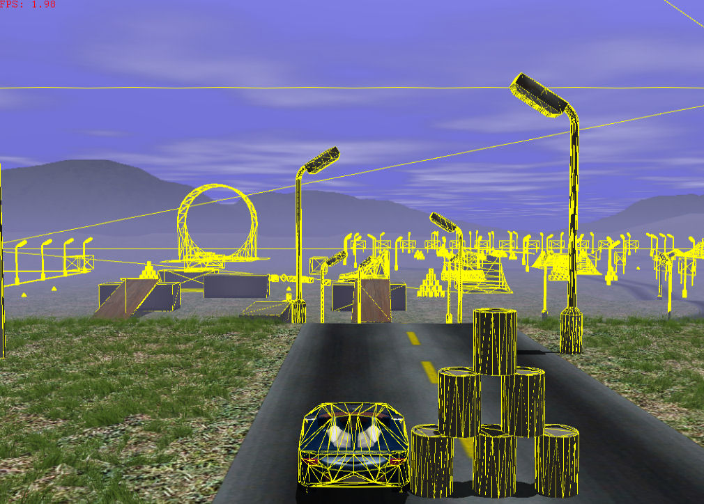
Obrázek 2.47: Systém obálek zobrazenı �lutou barvou jako sí� linií
Proto�e ihned po spuštìní se hra pøepíná do grafického celoobrazovkového re�imu, bylo nutné vytvoøit nìjaké interaktivní u�ivatelské rozhraní (Graphic User Interface), kterım by se nahradily nejèastìji u�ívané ovládací prvky implementované v MFC knihovnì. Byl tedy proveden vıbìr nejnutnìjších ovládacích prvkù, které budeme implementovat, a zvoleny funkce, jimi� budou jednotlivé ovládací prvky disponovat.
Ka�dı ovládací prvek se z funkèního hlediska skládá ze dvou nezávislıch èástí. Jedna zahrnuje jeho schopnost nakreslit se na obrazovku dle zadanıch parametrù. Druhá pak obsahuje jeho chování jako�to ovládacího prvku, tj. reagování na vstup u�ivatele. Proto�e jádro modulu Graphic nezahrnuje 2D grafiku (která je nutná k zobrazení ovládacích prvkù) a proto�e ovládací prvky jsou v podstatì jedinou (a� na HUD) souèástí projektu, která dvourozmìrnou grafiku vyu�ívá, rozhodli jsme se neimplementovat obecnı modul pro 2D grafiku, a radìji jsme do ka�dého ovládacího prvku zvláš� vnesli pouze podmno�inu funkcí nutnou právì pro jeho zobrazení. Právì z tohoto dùvodu jsou ovládací prvky souèástí modulu Graphic, pøesto�e z velké èásti øeší pøedevším interakci s u�ivatelem.
Základním kamenem všech ovládacích prvkù je abstraktní tøída CGUIControlBase. Tato obsahuje polo�ky dìdìné ka�dım ovládacím prvkem. Ty nejpodstatnìjší obsahují informace o umístìní prvku na obrazovce (absolutní pozicování) èi uvnitø rodièovského elementu (relativní pozicování), adresy obslu�nıch funkcí událostí a hodnotu nesenou danım elementem. Zbylé polo�ky se tıkají pøedevším grafické podoby daného prvku (prùhlednost, barva èi textura, pou�itı font, umístìní vzhledem k ostatním prvkùm). Pøesto�e všechny ovládací prvky dìdí od tøídy CGUIControlBase polo�ku Value, její interpretace se liší prvek od prvku, a tedy i implementace metod GetValue a SetValue je závislá na daném ovládacím prvku. (Pø.: Zatímco check box interpretuje Value jako booleanovskou hodnotu "checked", textové pole ji bude chápat jako øetìzec znakù.) Jistá úroveò abstrakce tak umo�òuje velmi jednoduché u�ívání ovládacích prvkù na vyšší programátorské úrovni, pøesto�e se stále od jeho u�ivatele oèekává, �e ví, s jakım typem prvku ve skuteènosti pracuje.
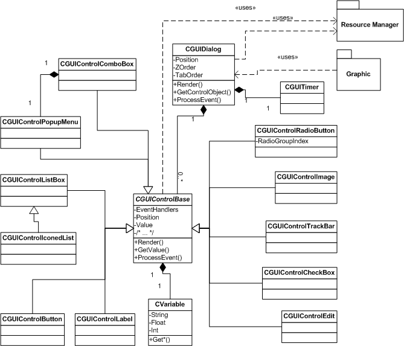
Obrázek 2.48: Class diagram pro GUI
Zastøešení všech ovládacích prvkù zajiš�uje tøída CGUIDialog (viz class diagram vıše), která pøedstavuje jeden dialog, tj. soubor ovládacích prvkù. V jeden okam�ik mù�e bıt zobrazen pouze jeden dialog, tzn. �e pøi potvrzení (èi uzavøení) nìjakého dialogu, které má mít za následek otevøení dialogu jiného, musíme pùvodní deaktivovat, aktivovat druhı a nechat jej zobrazit. Pro jeden dialog ve høe máme tedy jednu instanci tøídy CGUIDialog, která øídí zobrazování ovládacích prvkù v ní obsa�enıch (resp. k ní asociovanıch - ovládací prvky se zpravidla vytváøí pomocí funkcí dialogu, jeho� souèástí se tak autmaticky stanou). Pøi zmìnì nìkterıch prezentaèních vlastností dialogu (pozice na obrazovce, prùhlednost, ...) se tak autmaticky zmìny pøenáší na prvky v nìm obsa�ené. Souèástí dialogu je také tøída CGUITimer, je� je pou�ita k øízení objevování a skrıvání tooltipù (tj. plovoucích poloprùhlednıch nápovìd k prvkùm pod ukazatelem myši) a navr�ena tak, aby øídila libovolné mno�ství chronologicky øazenıch událostí (pro mo�nost rozšíøení GUI o animované efekty).
Chování prvkù je øízeno standardními zprávami Win32 API (konkrétnì WM_KEYDOWN, WM_CHAR, WM_MOUSEMOVE, WM_LBUTTONUP, WM_LBUTTONDOWN, WM_MOUSEWHEEL, WM_RBUTTONDOWN) a novì definovanımi zprávami namapovanımi do prostoru u�ivatelskıch zpráv (GUIMSG_RADIOBUTTONCHOOSEN == WM_USER + 164, GUIMSG_COMBOBOXROLLDOWN == WM_USER + 165, GUIMSG_TIMER == WM_USER + 166, GUIMSG_MOUSECLICK == WM_USER + 163). Zprávy však nejsou zachytávány automaticky, nebo� standardní chování systému Windows je takové, �e zprávy jsou zpracovávány u�ivatelskou funkcí (tzv. WndProc) registrovanou k oknu aplikace. Proto je nutné v této funkci testovat stav aplikace (zda-li má otevøenı nìjakı dialog) a správnému dialogu obdr�ené zprávy pøeposílat (to se dìje prostım voláním metody WndProc daného dialogu se stejnımi parametry, jaké obdr�ela obslu�ná funkce okna.
Metoda WndProc tøídy CGUIDialog provede analızu nadešlého stavu a na základì znalosti aktivního prvku (tj. prvek, kterı má fokus - v�dy existuje maximálnì jeden takovı), prvku pod kurzorem myši, jejich stavù (zakázanı, necílitelnı, atp.) a pøišlé zprávy pøedá zprávu správnému ovládacímu prvku, kterému zprávy patøí. Navíc s pøedáním zprávy také provede patøièné zmìny stavù na zúèastnìnıch prvcích, pøípadnì vygeneruje zprávy nové. (Napøíklad pøi zachycení WM_LBUTTONDOWN a WM_LBUTTONUP vygeneruje za jistıch okolností novou zprávu GUIMSG_MOUSECLICK.) Pøedání zprávy z dialogu do pøíslušného prvku je stejnı proces jako z okna do dialogu, nebo� ka�dı ovládací prvek má svoji vlastní øídící funkci se stejnou deklarací jako dialog. Ani tato funkce neprovede finální zpracování doruèené zprávy, ale pouze ze získanıch parametrù vyjme data, interpretuje je v závislosti na typu zprávy a zprávu pøelo�í na událost.
Událost je funkce ovládacího prvku, která se vykoná jako reakce na nìjakou zprávu nebo zmìnu stavu prvku. Vìtšina zpráv je pøelo�ena pøímo na událost, tedy napøíklad po pøijetí zprávy WM_KEYDOWN se vyvolá událost OnKeyDown, ale mnohé události také vzniknou pouze jako reakce na zmìnu stavu objektu (napø. OnGetFocus pøi aktivaci objektu bez ohledu na to, jakım zpùsobem byl zaktivován, OnChange pøi zmìnì hodnoty u�ivatelem apod.). V pøípadì, �e má aktivní instance objektu asociována pro danou událost nìjakou u�ivatelskou funkci (napø. zavøení dialogu po klepnutí na tlaèítko), pak se tato funkce provede a následnì se zavolá defaultní handler události (napø. pøi stiknutí šipky na klávesnici se posune kurzor v textovém poli o jednu pozici napravo apod.). Pro nìkteré události nemusí existovat ani defaultní handler, ale i v tom pøípadì se pova�uje zpráva za zpracovanou. Celı postup pøedávání a zpracování zpráv je zobrazen na následujícím obrázku:
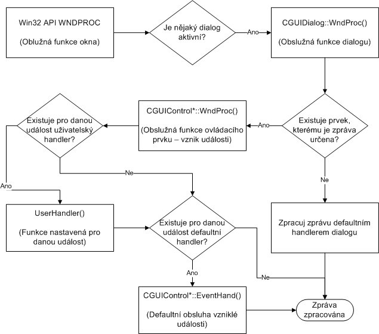
Obrázek 2.49: Zpracování zpráv v GUI
Zøejmou vıhodou tohoto pøístupu je jeho èásteèná korespondence se zpùsobem zpracování zpráv ve Win32 API, a tedy snadná implementace na této úrovni (staèí pøedávat všechny pøíchozí zprávy aktivnímu dialogu). Ta samá vlastnost se obrací v nevıhodu, jakmile jsou zprávy v programu zpracovávány na vyšší úrovni a je nutné je interpretovat (napøíklad pøíjem kláves pomocí DirectInput nebo øízení pomocí událostí v .NET aplikacích), nicménì volili jsme radìji pøístup na ni�ší úrovni, kterı je mo�no pou�ít za všech okolností. Na funkèní úrovni jednotlivıch dialogù je naproti tomu vıhodnı pøístup zalo�enı na generování událostí, jakı se pou�ívá v .NET aplikacích. Ka�dı ovládací prvek je objekt, kterému staèí nastavit handlery pro zpracování zvolenıch událostí (zpravidla si vystaèíme s reakcí na OnChange), èím� se vyhneme psaní zbyteèného kódu pro ka�dı dialog zvláš� a naopak nám to umo�òuje do konkrétního dialogu snadno implementovat vyšší funkcionalitu.
Drobnou nevıhodu nese také zvolenı model závislostí. Ovládací prvky, jako�to instance tøídy CGUIControl*, nemají pøístup k polo�kám tøídy CGUIDialog, ani neví, s jakım dialogem jsou asociovány. Ve chvíli, kdy je nutno pøedat nìjakou informaci z konkrétního ovládacího prvku rodièovskému dialogu, musí se tak provést pomocí zaslání zprávy oknu aplikace. Takto jsou øešeny napøíklad zmìny volby uvnitø jedné "radio group" (viz odstavec Typy prvkù), nebo� øízení groups je provádìno na úrovni dialogu, kterı se o zmìnì nastavení konkrétní instance CGUIControlRadioButton dozví a� na základì pøíchozí zprávy GUIMSG_RADIOBUTTONCHOOSEN vygenerované danım radio buttonem. Popsané chování lépe znázoròuje následující diagram.
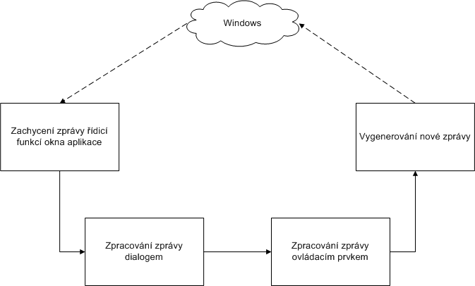
Obrázek 2.50: Pøenos informace z ovládacího prvku do dialogu
Jak ji� bylo zmínìno, vybrali jsme pouze nejpou�ívanìjší z bì�nıch ovládacích prvkù, které postaèují úèelùm herních nabídek. Jména tøíd (viz vıše uvedenı class diagram), které je reprezentují, jsou zpravidla samovysvìtlující, pøesto zde v plném seznamu i s demonstraèními obrázky:
| Reprezentující tøída | Popis ovládacího prvku | Demonstraèní obrázek |
| CGUIControlButton | Tlaèítko s popiskem. Proto�e ka�dı ovládací prvek mù�e mít svou vlastní texturu, je mo�né ka�dému tlaèítku pøiøadit i zvláštní obrázek, a to jak pro stisknuté, tak pro uvolnìné tlaèítko. | |
| CGUIControlCheckBox | Tlaèítko se dvìma stavy - zvoleno/zrušeno. | |
| CGUIControlComboBox | Rozbalovací nabídka. Implementována je tak, �e po aktivaci se vytvoøí nová instance tøídy CGUIControlPopupMenu, pøidru�í se k tomuto objektu a získá fokus. Po ztrátì fokusu nebo volbì nìjaké polo�ky se popup menu schová a vrátí svou hodnotu nadøazenému prvku. | |
| CGUIControlEdit | Jednoøádkové editaèní pole pro text. | |
| CGUIControlIconedList | Tento prvek je celı odvozen od CGUIControlListBox. Jedinım rozdílem je mo�nost pøidru�it ka�dé polo�ce seznamu ikonku (obrázek), která se patøiènì zmenší/zvìtší a zobrazí vedle textu. | |
| CGUIControlImage | Pouze zobrazí obrázek ulo�enı ve zvoleném souboru formátu GIF, PNG, JPEG, TGA nebo BMP. | |
| CGUIControlLabel | Slou�í jako fixní text, kterı nemù�e bıt oznaèen, editován ani nemù�e získat fokus. | |
| CGUIControlListBox | Seznam textovıch polo�ek, z nich� lze v�dy zvolit právì jednu. V pøípadì vìtšího poètu polo�ek jsou k dispozici tlaèítka pro rolování seznamem. | |
| CGUIControlPopupMenu | Plovoucí menu, tj. seznam textovıch polo�ek fixní délky, z nìho� lze vybrat právì jednu polo�ku. | |
| CGUIControlRadioButton | Obdoba CGUIControlCheckBox, ale na úrovni dialogu je mo�né zaøazovat tyto prvky do skupin, tzv. "radio groups", ve kterıch platí, �e v�dy právì jeden prvek je vybrán. | |
| CGUIControlTrackBar | Slou�í pro grafické znázornìní èíselné hodnoty uvnitø zvoleného intervalu a mo�nosti plynulé zmìny této hodnoty ta�ením myší. |
Bylo by velmi obtí�né a nepøíjemné definovat rozlo�ení dialogù uvnitø kódu programu, proto se vyu�ilo hierarchické struktury konfiguraèních souborù a veškerı popis ka�dého dialogu a obsa�enıch ovládacích prvkù se pøenesl z programové do konfiguraèní èásti programu. To má za následek nejen odlehèení kódu, ale pøedevším to umo�ní snadnou zmìnu podoby herního GUI (opìt se poèítá s tím, �e se najdou u�ivatelé, kteøí budou chtít hru rozšiøovat, zkrášlovat a vylepšovat).
Ka�dı dialog je zadefinován dvìma soubory - souborem deklarace textur a souborem definice ovládacích prvkù. Deklarace textur popisuje podobu ovládacích prvkù, resp. definuje mapování ovládacích prvkù do zvolené textury. Obsahuje tedy jména souborù s texturami a souøadnice, z jakıch se mají z dané textury naèíst grafické podoby jednotlivıch prvkù. Ovládací prvek navíc není definovanı jedinım obdélníkovım vıøezem, ale pro umo�nìní zmìny velikosti prvku bez pøílišné ztráty kvality jeho podoby se prvek definuje z celé øady drobnıch èástí v závislosti na konkrétním typu ovládacího prvku (horizontální linie, vertikální linie, podsvícení, pozadí, ...). Navíc je samozøejmì mo�né vyu�ít prùhlednosti textur s vlastním alfa kanálem k získání jinıch ne� obdélníkovıch tvarù èi k vytvoøení poloprùhlednıch ploch. Následující obrázek je pøíkladem takové textury pou�ité ve høe,
Obrázek 2.51: Textura pro ovládací prvky
pro kterou je následnì tøeba vytvoøit deklaraci texturovıch souøadnic ovládacích prvkù. Celı soubor je velmi rozsáhlı, proto pouze ukázka deklarace textury pro dialog s plovoucí nabídkou:
<Dialog> Dialog.Background.X = 0 Dialog.Background.Y = 0 Dialog.Background.Width = 512 Dialog.Background.Height = 341 <PopupMenu> Popup.Background.X = 330 Popup.Background.Y = 381 Popup.Background.Width = 20 Popup.Background.Height = 20 Popup.ActiveBackground.X = 360 Popup.ActiveBackground.Y = 381 Popup.ActiveBackground.Width = 20 Popup.ActiveBackground.Height = 20 Popup.TopLeft.X = 290 Popup.TopLeft.Y = 381 Popup.TopLeft.Width = 4 Popup.TopLeft.Height = 4 Popup.TopRight.X = 316 Popup.TopRight.Y = 381 Popup.TopRight.Width = 4 Popup.TopRight.Height = 4 Popup.BottomLeft.X = 290 Popup.BottomLeft.Y = 402 Popup.BottomLeft.Width = 4 Popup.BottomLeft.Height = 4 Popup.BottomRight.X = 316 Popup.BottomRight.Y = 402 Popup.BottomRight.Width = 4 Popup.BottomRight.Height = 4 Popup.HorizLine.X = 294 Popup.HorizLine.Y = 381 Popup.HorizLine.Width = 4 Popup.HorizLine.Height = 4 Popup.VertLine.X = 290 Popup.VertLine.Y = 385 Popup.VertLine.Width = 4 Popup.VertLine.Height = 4 </PopupMenu> </Dialog>
Deklarace textur funguje jako šablona, která se aplikuje pøi definici dialogu, a kterou je mo�né pro konkrétní prvek dialogu pøedefinovat (kupøíkladu chceme mít všechna tlaèítka podle šablony, a� na jedno, které pøedefinujeme). V reálu tedy máme jeden deklaraèní soubor a øadu souborù definic dialogù (ka�dı soubor definuje právì jeden dialog). Pokud tedy zachováme velikost a rozmístìní ovládacích prvkù v dialozích, zmìna grafické podoby všech dialogù najednou obnáší pouze zmìnu textury a deklaraèního souboru. Definice dialogu pak definuje rozlo�ení prvkù uvnitø dialogu, jejich velikost, podobu, pou�ité písmo, popisky atd. Podstatná je tu dìdiènost mnohıch polo�ek z vlastností dialogu smìrem k jeho prvkùm, tak�e není tøeba definovat kupøíkladu písmo nebo èasovou prodlevu zobrazení nápovìdy ke ka�dému prvku zvláš�, ale pouze tehdy, chceme-li pro zvolenı prvek jinou hodnotu ne� pro ostatní.
Nadefinovanı dialog se umí zobrazit defaultní handlery událostí zpracovávají základní zprávy podle typu ovládacího prvku. Po naètení je tedy mo�né klepat na tlaèítko nebo vybírat polo�ky plovoucí nabídky, avšak definice dialogu ji� neobsahuje popis toho, co se má s hodnotami objektù udìlat v programu. Proto, i kdy� nadefinujeme dialog v textovém souboru a necháme jej v programu vytvoøit automaticky, musíme mít povìdomí o tom, co z daného souboru naèítáme. Ka�dı prvek má polo�ku Name, pøes kterou se dá v rodièovském dialogu dohledat (prvkùm s nezadanou polo�kou je vygenerována náhodná; k prvkùm se dá dostat také pøes jejich poøadí nebo podle jinıch známıch parametrù). Po vytvoøení je tedy potøeba naplnit nìkteré ovládací prvky správnımi daty a zajistit jejich správnou funkcionalitu v rámci dialogu. K zjednodušení tohoto procesu byly napsány tøídy, které jsou popsány v kapitole o herním GUI. Pøíklad definice dialogu s jedinım tlaèítkem následuje:
<Dialog> X = 100 Y = 100 Width = 600 Height = 400 FontDeclaration = DialogBasic.font BackgroundTexture = GUI\DialogBackground.png TextureDeclarations = GraphicTest.dlgDecl Transparency = 0.25 ToolTipTransparency = 0.0 ControlsTransparency = 0.0 BasicTextColor = 0xffd0d0d0 ActiveTextColor = 0xffffff00 Color = 0xff0000a0 SliderPosMin = 10 SliderPosMax = 109 ToolTipDelay = 400 </Dialog> <Control> Name = CloseButton Type = button X = 240 Y = 350 Width = 120 Height = 25 Value = Zavøít Enabled = 1 Visible = 1 TabStop = 8 ZOrder = 10 AbsolutePosition = 0 FontDeclaration = DialogButton.font Color = 0xffffffff ToolTip = Zavøe tento dialog TextFormat = 68 <DownTexDecl> X = 130 Y = 348 Width = 120 Height = 25 </DownTexDecl> </Control>
Ka�dá hra musí mít zpùsob, jakım dá u�ivateli vìdìt o stavu a prùbìhu jeho hraní. K takovému úèelu slou�í HUD (Head-up display), kterı zobrazuje podstatné informace. Takovı HUD se musí nìjakım zpùsobem zobrazit na obrazovku, a tudí� musí bıt jeho grafická èást, jádro implementováno v grafickém jádru programu. Takovı pøístup jsme k tomu zaujali i my.
Na jádro HUDu jsme mìli následující po�adavky:
Zvolili jsme øešení, kdy jsme HUD rozdìlili na jednotlivé prvky, elementy HUDu. Tyto prvky buï nesou obrazovou nebo textovou informaci. Jsou tedy dvojího druhu HUDTextureElement a HUDTextElement.Tyto tøídy HUDTextureElement a HUDTextElement jsou odvozeny z tøídy HUDElement, aby se zachoval stejnı interface pro jejich ukládání. Ka�dı takovı element dostane pøi vlo�ení do jádra HUDu tøídy CHUDCore svùj jedineènı identifikátor ElementID. Ka�dı element má svoji pozici na obrazovce buï nezávislou nebo je navázán na jinı element a potom je jeho pozice relativní k pozici elementu, na kterı je navázán. Element mù�e bıt navázán jenom na element s ni�ším ElementID, aby nedošlo k zacyklení návaznosti elementù na sebe, co� by pak jádro HUDu nebylo schopné správnì vyhodnotit. Vùèi elementu, na kterı je element navázán mù�e element zaujímat buï relativní pozici stanovenou v jeho souøadnicích, nebo mù�e vyu�ít jednu z mo�ností alignu. Mo�nosti alignu jsou navzájem kombinovatelné (rozumné kombinace, zbytek kombinací má blí�e neurèenı efekt) a jsou následovné:
Ka�dı element má nastavitelnou viditelnost. Pro HUDTextElement je mo�né nastavit ještì barvu textu a font a formát textu. Pro HUDTextureElement je mo�né nastavit obrázek (nebo jeho èást), která se má renderovat, a procento šíøky a vıšky, které se má renderovat (to slou�í pro renderování èásti obrázku, co� nám umo�nilo vytvoøit digitální ukazatel rychlosti).
Pøed samotnım renderováním je potøeba udìlat následující úkony:
Pøi zmìnì rozlišení obrazovky je potøeba zavolat OnScreenResolutionChange(), OnLostDevice() a OnResetDevice() tøídy CHUDCore.
Obrázek 2.52: Systém jádra HUDu.
Jádro grafického enginu je reprezentováno tøídou CGraphic. Tato tøída má dvì hlavní funkce. Jednak je to komunikace s hardwarem (zmìna rozlišení obrazovky a inicializace všech potøebnıch struktur) voláním funkcí Direct3D, jednak øízení zobrazování podle zvolenıch parametrù. V inicializaèních funkcích objektu této tøídy se provádí kontrola kompatibility nastavení se schopnostmi dostupného grafického hardwaru, vytváøí se buffery potøebné pro zobrazování a struktury pou�ívané k optimalizaci nìkterıch procesù. Tato tøída také obsahuje rukojeti všech dostupnıch shaderù a promìnnıch v nich pou�itıch. Pro ostatní moduly hry je tøída CGraphic té� hlavním rozhraním zastøešujícím celı modul Graphic.
Srdcem této tøídy je funkce RenderScene(), která provádí zpracování a zobrazení jednoho snímku (bez ohledu na to, co je obsahem snímku). Podle nastavení mnoha konfiguraèních polo�ek provádí tato funkce vıbìr renderovanıch objektù a zpùsob jejich zpracování. Celı proces je pomìrnì slo�itı (nìkolik tisíc øádkù kódu), a proto se jej pro snazší pochopení pokusíme zobrazit co nejjednodušším zpùsobem pomocí nìkolika diagramù. Zobrazovací proces je kvùli renderování terénu (viz LOD0) rozdìlen do dvou fází. To odrá�í diagramy na obr. 2.53 a 2.54, které nabízí základní náhled na renderování jednoho celého snímku.
Obrázek 2.53: První fáze zobrazovacího procesu.
Obrázek 2.54: Druhá fáze zobrazovacího procesu.
Hned v úvodu fáze 1 je vidìt rozhodování tıkající se dialogového módu (mód, kdy se nezobrazuje scéna), pøi kterém se provede pouze volání PrepareScene() a PresentScene() (PresentScene je vidìt a� na konci diagramu na obr. 2.54). Tyto funkce vymezují voláními funkcí Direct3D (BeginScene() a EndScene()) oblast kódu, kde je mo�né nìco renderovat. Funkce PrepareScene() navíc provádí vymazání obsahu všech mìnících se bufferù spojenıch se zobrazováním (z-buffer, stencil buffer, back buffer) a nastavuje všechny transformaèní matice podle polohy pozorovatele a konfigurace kamery. PresentScene() ještì zobrazí pøípadnı dialog a kurzor myši do pøipraveného obrazu, kterı následnì zobrazí na obrazovce.
Podstatné na první fázi je pøedevším zobrazování vzdálenıch objektù. Vzdálenım objektem se rozumí objekt, kterı je umístìn na poli, jeho� povrch se nezobrazuje ve vyšší (ne� nulové) úrovni detailu. Kdyby takovı objekt byl zobrazován a� ve druhé fázi (po smazání z-bufferu), mohlo by se stát, �e bude vidìt skrz vzdálenı (definován stejnì jako vzdálenı objekt) terén, kterı by jej mìl správnì pøekrıt. Z tohoto dùvodu je nutné renderovat pøed vymazáním z-bufferu nejen LOD0, ale také všechny objekty (i transparentní) èi obloha s pozadím. Za povšimnutí té� stojí to, �e obloha se renderuje jako poslední. Velká èást oblohy se tak díky z-testu vùbec nezobrazuje (neprochází pixel shaderem), co� ušetøí vıkon grafické karty. Správné poøadí zobrazování objektù scény je velmi dùle�ité, nebo� je to ten nejjednodušší zpùsob, jak zvıšit (ale také sní�it) snímkovací frekvenci.
Ve druhé fázi ji� není mo�né zabıvat se vlivem poøadí renderování objektù na rychlost, nebo� vìtšina objektù má pevnì dané poøadí z jinıch dùvodù (transparentní objekty musí bıt zobrazovány a� po zbytku scény, HUD se zobrazuje zcela nakonec atd.). Nejvıznamnìjší èástí této fáze je funkce RenderDayScene(), resp. RenderNightScene() je-li noc. Èinnost první zmínìné je patrná z diagramu na obrázku 2.55. Noèní scéna je daleko slo�itìjší, ale její zobrazení v podstatì odpovídá diagramu na obr. 2.21 uvedeném v kapitole Stíny.
Obrázek 2.55: Zobrazení denní scény - hlavní èást druhé fáze zobrazování.
Na závìr je vhodné pøipomenout, �e v celé druhé fázi se zobrazují pouze ty objekty, které nejsou vzdálené (viz vıše), tzn. �e ka�ou skupinu objektù je tøeba mít buïto setøídìnu podle vzdálenosti od pozorovatele a procházet v�dy pouze èást seznamu, nebo procházet seznam objektù ve skupinì dvakrát a v�dy vybírat pouze ty objekty, které jsou, resp. nejsou, vzdálené.